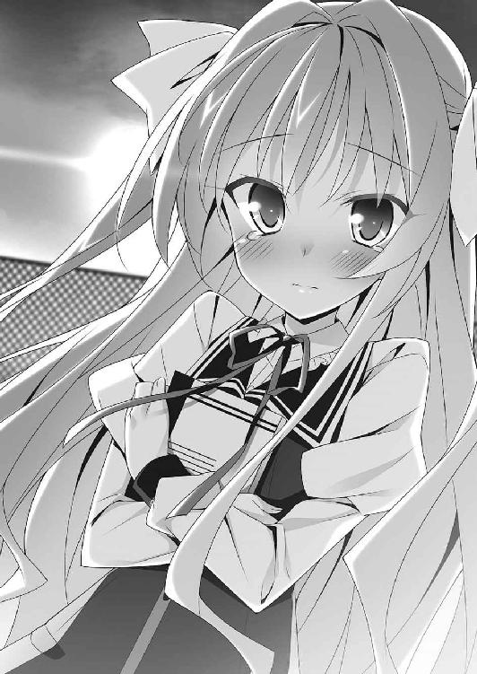
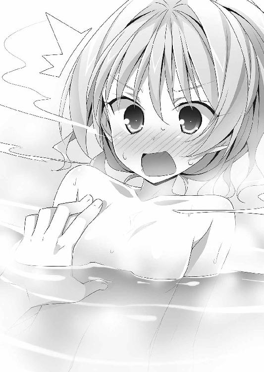
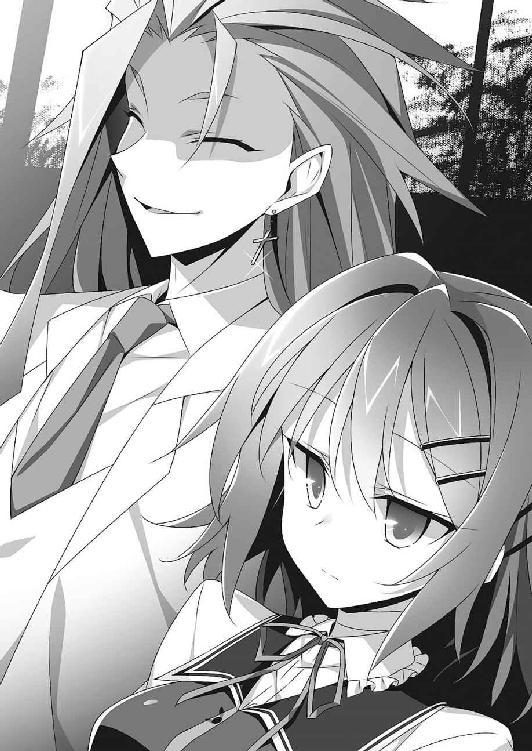
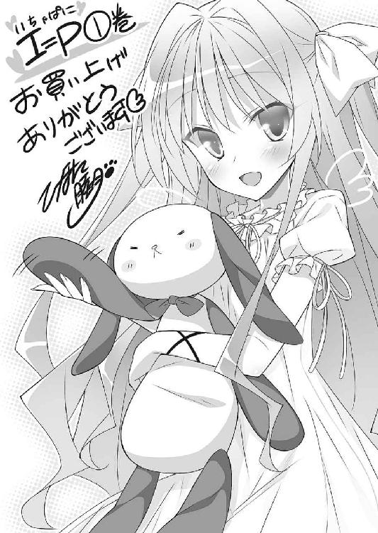

| I=P ―いちゃぱに― (富士見ファンタジア文庫) | |
| 春日 秋人 | |
| (2014) | |

I=P ―いちゃぱに―
春日秋人

富士見ファンタジア文庫
本作品の全部または一部を無断で複製、転載、配信、送信したり、ホームページ上に転載することを禁止します。また、本作品の内容を無断で改変、改ざん等を行うことも禁止します。
本作品購入時にご承諾いただいた規約により、有償・無償にかかわらず本作品を第三者に譲渡することはできません。
本作品を示すサムネイルなどのイメージ画像は、再ダウンロード時に予告なく変更される場合があります。
本作品は縦書きでレイアウトされています。
また、ご覧になるリーディングシステムにより、表示の差が認められることがあります。
口絵・本文イラスト ひなた睦月
プロローグ
......坂上十夜は夢を見ている。
ぼやけた情景の中に、幼い少女と、少女を追い詰める大きな黒い人影。
人影は槍を手にしていた。
その槍が、今にも少女を射殺さんと振り上げられる。
十夜は、槍と少女との間に割って入った。
──守るんだ！
だが。
突き出された槍は、十夜の胸をあっさりと貫いて。
彼が背中にかばった少女をも、串刺しにした。
第一話
四月。新年度となり、十夜の通う高校も今日が始業式だ。
自室にあるクローゼットの鏡の前で、十夜は自分の顔と向き合っていた。
「マシになってるよな......？」
鏡には、眼鏡をかけた少年の顔が映っている。
少年はとても目つきが鋭かった。凶悪、と言ってしまっていい。
けれど眼鏡のおかげで、その目つきの悪さは緩和されているようだった。
バイトでコツコツ貯めた資金で、ようやく手に入れた眼鏡である。税込み１９８００円。目元をやわらかく見せることに拘った結果、けっこうな出費だった。ちなみにレンズに度は入っていない。ダテ眼鏡である。
この凶悪な目つきのせいで、十夜はこれまで誤解され続けてきたのだ。
ノックの音が聞こえた。
「十夜様、そろそろご登校のお時間ですが」
眼帯をつけた執事服の少年が扉を開けて現れた。
「アスタロト......。だから、その『十夜様』はやめてくれって」
「もったいないお言葉。はっ、十夜様、そのお顔は......」
「あ。うん。どうかな？ 似合う？」
「な、なんて軟弱な......いつもの覇気はどうなされたのですか。ちんぴらどもをにらんだだけで失神させ、不良娘どもを魅了し、人間の子どもたちを一人残らず泣かせるあの素晴らしい眼光が見る影もなく......っ」
「よしっ」
十夜はぐっと拳を握った。
──だから、俺はこの眼鏡を買ったんだ！
銀髪の執事はキッと真面目な顔になった。ピッと指を一本立ててくる。
「いいですか十夜様。十夜様は、いずれ魔王となられるお方なのですよ」
魔王。それは魔界を統べる悪魔の王。そして十夜の父親だ。
十夜は魔王の一人息子である。
けれど十夜は純粋な悪魔ではなく人間とのハーフだ。
ゆえに人間として、人間界での義務教育を受けている。両親の配慮で、悪魔と人間、どちらの道も選べるようにしてくれた。
「アスタロト。だから何度も言ってるだろ。俺は魔王になる気はないって」
「むぅ。どうしてですか」
頰を膨らませる執事の脇を抜けて、十夜は部屋を出た。
部屋を出ると、石造りの通路が続いている。
──魔王城。
魔界に存在する、魔王の居城である。
十夜が幅広の通路を歩いていると、壁をぶち破ってなにかが吹き飛んできた。
崩れた壁の瓦礫の中からむくりと異形が起き上がる。山羊の頭の、いかにも悪魔然としたその異形は十夜に気づくと、ずらりと並んだ牙を持ち上げてニカッと笑った。
「王子！ 今日から学校ですかい？ 勉強するとかスゲェっす！」
「......なにやってんだ？」
「訓練でさぁ。天使どもをいつでもぶち殺せるよう鍛えとかねぇと！」
悪魔は壁に空いた穴から飛び出していった。ドォオン、ドォンと空気を震わせる戦闘音が聞こえてくる。
歩いていると、十夜を見つけた悪魔たちが次々と声をかけてくる。
「あ、十夜さまぁ。十夜さまだぁ！ こっち見てー」
「オハヨーゴザイマス」
悪魔たちの容姿は、アスタロトのように人間と変わらない姿の者もいれば、異形の者もいる。コウモリの羽根を生やした半裸の女性だったり、骸骨だったりスライムだったり多種多様だ。
魔王城が十夜の家であり、言ってみれば悪魔たちは仲間──家族である。
「みな、十夜様を慕っています。僕たちを魔王様に代わってまとめられるのは十夜様しかいません！」
後ろをついてきているアスタロトの言葉に、十夜はつい、ため息が漏れてしまう。
「俺が魔王になってみろ。すぐに倒されてしまうのがオチだっての」
なにしろ多少タフなだけで、運動能力はただの人間と変わらない。炎が出せたり念力が使えたりもしない。
「問題ありません。僕がお守りいたします」
「そんなの俺はイヤだからな」
「十夜様？」
「あーもう！ とにかく俺は魔王にはならない！ 向いてないからな！」
決意を込めて十夜は告げた。
「俺は、清く正しく人間として生きていくんだ！」
だが──
○
「ひえー！ 魔王じゃあああ！」
しわがれた声が、青い空に響き渡った。
高校がある人間界へやってきた十夜は、お婆さんに悲鳴を上げられていた。
魔界から人間界へ繫がる《門》を潜ると、『坂上』と表札のかかった一軒家に出る。今はその一軒家から学校へと向かう通学路。歩道橋を前に、大きな荷物を背負って立ち尽くしているお婆さんを見つけた。手伝えないかと声をかけたのだが──
「悪の化身じゃあ！ おのれ、あやかしめ！ 邪悪よ、去れぃ！」
「いや、ええと、あれ？ 眼鏡の効果がない......？」
腰を抜かしたお婆さんの前で、早くも途方に暮れてしまう。
人間界の一般人は魔界や魔王が実在することを知らない。だから、十夜が魔王の息子だということは誰にもわからないはずだ。なのに、十夜は初対面の相手にすら、魔王と言われ恐れられてしまう。そう。まさに今のようにだ。
（俺の目つきのせい、だよな......けど、そのための眼鏡だったのに！）
マシにはなった。魔界の執事に残念がられる程度には意味があった。
けれど──肝心の人間相手には、焼け石に水の効果しかなかったということだ。
「な、なんと......！ 瞳の闇が増しおった!? な、なにを企んでおるのじゃ!?」
「いえあの、違うんです。落ち込んでるだけなんです......」
「やめるんじゃ！ わたしゃ、喰ってもおいしくないからの！ 骨と皮だけじゃあ！」
......だめだ。話も聞いてもらえない。誰か親切な人を呼んでこよう。
怖い思いをさせてしまって申し訳ないと思いつつ、十夜はお婆さんから離れようとした。
と。
「お婆ちゃん、大丈夫ですよ。坂上くんは優しい人ですから」
十夜の横から少女が現れた。屈み込んで、お婆さんに手を差し伸べる。
「姫川......」
「うん。おはよ、坂上くんっ」
こちらに顔を向けると、同級生の少女──姫川ゆいは、ふわりとやわらかい笑みを浮かべてくる。
十夜はどきりとして目を逸らした。
姫川ゆい。
彼女は唯一、十夜を怖がらない女の子だ。
十夜は幸せな気持ちになった。胸の奥が温かくなり、自然と頰が緩む。
「ま、魔王が不敵に笑っておる！ 目がギラギラ輝いておる！ キ、キケンじゃ！ 逃げるんじゃ、別嬪なお嬢ちゃん！ 邪悪なモノは心の清い娘が大好物なんじゃ！ 喰われてしまうぞぃ！」
「え、えっと、落ち着いてお婆ちゃん」
「姫川......わるいけど、あとは頼む。俺がいても怖がらせるだけだから」
「えっ、坂上くん。でも......」
なにか言いたそうな姫川に、十夜は背を向けた。お婆さんの視界に自分の顔が入らないようにして道の端へ。電柱の陰に身を寄せて、もういいかな、と振り返る。
お婆さんの背中の荷物を支えて、姫川は歩道橋を上っていた。
気づくと十夜は、ぎゅっと手を握りしめていた。
離れた場所で見ていることしかできない自分がもどかしい。
そのとき十夜の前を、金色に輝く髪を颯爽となびかせ、小柄な少女が走り抜けていった。
金髪？
小さな背丈だが高校生らしい。十夜たちと同じ学校の制服を着ていた。その少女は姫川に追いつくと、いっしょになってお婆さんが歩道橋を渡るのを助けた。
少女に向かって、姫川が笑いかけている。ありがとう、と言っているようだ。
──いつか、あんなふうにお礼を言われることがあるだろうか。
「けど、この目つきじゃ無理か。眼鏡も効果がなかったし......」
俺の税込み１９８００円......と十夜はため息をつく。
悪魔からは力もないのに次の魔王と期待され、人間からは魔王だと怯えられて拒絶されてしまう。見た目は魔王。中身は人間。中途半端で、どちらにも馴染めない。
ザッ、と背後で音がした。
振り返ると、髪を真っ赤に染めた男が、ビルの間の路地から歩み出てくるところで──
「見つけたぜ、坂上！ 今日こそはテメェを倒してやる！」
「なんでだよ......」
十夜はうんざりした。
「目つきが気にくわねぇからだ！」
「だからなんでだよ!?」
赤髪の男は拳を振り上げ襲いかかってくる。
とっさに跳び退くことで避けるが、眼鏡をはじき飛ばされた。車道に転がった眼鏡が、通りがかった車に踏みつぶされる。
（俺の春休みのバイト代......っ）
男の追撃を避けつつ、十夜はちらりと姫川のほうへ視線を向けた。お婆さんと金髪少女とともに歩道橋の反対側にいる。幸い、まだこちらの騒ぎには気づいていないようだ。
巻き込むわけにはいかない。
男に背を向け、十夜はその場から駆け出した。
数分後。雑居ビルに挟まれた薄暗い道を、十夜はひた走っていた。
背後から、ドドドドド！ と集団の立てる足音が迫ってくる。
「「「待ちやがれ坂上！ 逃げんじゃねぇ！」」」
怒り狂った形相の男たち。彼らの目は血走っている。
最初の男から逃げていると、一人また一人と男たちは集まってきて、大所帯になっていた。三十人以上いる。こいつらみんな暇なのか!?
そうして逃げ回っている内に、十夜は行き止まりの空き地へと追い込まれていた。入り口以外がコンクリートの塀で囲まれている。
勢いをつけ、十夜は塀を乗り越えようとした。だが──
「そこまでだぜ、坂上！ あの女がどうなってもいいのか!?」
脚が止まる。全身から血の気が引いた。声の主は、最初に襲いかかってきた赤髪の男だ。
赤髪を先頭に、空き地にぞろぞろと男たちが入ってくる。
「ククク、ずいぶん仲が良さそうだったじゃねぇか」
「お前ら。まさか、姫川を......？」
赤髪は得意げに自分の携帯端末をかざした。
「すでにオレの仲間が捕まえているはずだ。意味はわかるよなぁ？」
十夜は奥歯をかんだ。冷たい塀に背中をつけて、両手を持ち上げる。
「......わかった。俺のことは好きにしろ。けどな」
言葉を切って、赤髪をにらみつける。
「彼女になにかしたら許さない」
ひっ、と先頭の赤髪を始め、男たちは竦み上がった。
狙った効果はあったようだ。こういうときだけは、目つきの悪さも役に立つらしい。
「ちっ、さすがは『小此木中の魔王』と呼ばれた男......！ 眼力は衰えてねぇようだな。だが、その伝説も今日限り──んあ？ おいどうした。は？ 改心した？ 世界は美しい......？ なに意味のわかんねぇことを言ってやがる！」
耳に当てた携帯端末に向かって赤髪がわめいた。
「どうしたんだ？」
「な、なんでもねぇよ！ テメェはこれからオレらに大人しくボコられてりゃいいんだ！」
端末をポケットにしまうと、赤髪はボキボキと拳を鳴らしながら近づいてきた。他の男たちも嗜虐的な表情を浮かべて距離を縮めてくる。
（まあ、姫川が無事なら、いいよな......）
自分のせいで誰かが被害を受けるなんて、そっちのほうがよっぽど耐えられない。
赤髪が固く握った拳を振りかぶる。
十夜は目を閉じた。
だが、予想した衝撃はいくら待ってもやって来なかった。
どさっ。
音がした。目を開けると、赤髪が地面に倒れ伏している。
ピクピクと手足を震わせていた。なぜか髪が爆発したみたいに逆立っている。
「悪は見過ごせない。わたしは世界を清める！」
凜とした声が、頭上から降ってきた。
○
金色の髪の少女が、ビシッと人差し指を突き出した姿勢で、塀の上に立っている。
とても小柄だ。人形みたい、という言葉がしっくりくる。
顔立ちも、人形みたいに整っている。いや──完成されている。
澄んだ空をそのまま閉じ込めたような青い瞳。淡く輝く白い肌。桜色の唇。朝日を浴びてきらめく髪は、太陽に負けない輝きを放っている。
──ものすごい美少女だ。
その金髪には見覚えがあった。数分前に見かけたばかりだ。姫川といっしょになってお婆さんを助けていた、あの少女。
どうしてここに？
（あと、なんで塀の上に？）
少女は空き地に集まった不良たちへ凜々しい表情を向けていたが、十夜のほうを見ると、静かに微笑んできた。
「わたしはマリア。名乗るほどの者じゃないわ」
「............」
名乗っていた。
「安心して。わたしが通りかかったからには、もう大丈夫よ」
小さな体で背伸びして、マリアと名乗った少女は、慎ましやかな胸を叩いてみせた。
「ラピュ○に上陸した気でいてちょうだい！」
「いや崩壊するよなそれ!?」
「助けるわ！」
少女──マリアは、ためらうことなく塀から跳んだ。
金髪が舞い上がりキラキラとした放物線を描く。
十夜の頭上を跳び越えて、マリアはすとんと鮮やかに着地した。やっぱり小さい。十夜の胸より低い位置につむじがある。
「──って、女の子がなにやろうってんだ！ 危ないって！」
慌てて十夜はマリアをかばって前に出ようとした。
けれどマリアの手がすっと上がって、十夜の動きを遮った。地面と平行に上げた手も、十夜の腹の位置までしかない。
十夜に背を向けたままマリアは威勢良く告げてくる。
「心配してくれてありがとう。でも大丈夫だから。任せて！ さっきも襲われそうになってた女の子を助けてきたんだから！」
「え......？」
「それに世界を清めるのがわたしの使命！」
「ちょ、ちょっと待ってくれ。女の子を助けた？ それって......」
まさか姫川を？ この少女が？
でも、辻褄は合う。この少女──マリアは、さっきまで姫川といっしょにいたのだ。
金色の後ろ頭を十夜は見つめる。
......いったい何者なんだ？
「くっそ、なんだったんだ？ 体が痺れて──」
赤髪が復活していた。起き上がった彼は、十夜......ではなく、十夜の前にいるマリアを見て、言葉を止めた。目を見開き、なにやらとてつもないショックを受けた様子で──
「な、なんてッ、なんて美しいんだ！ 心が洗われていくようだぜ......」
「って、泣いてる!?」
「気づいてくれたのね！ 悪のむなしさに！」
大粒の涙をこぼしながら赤髪はしきりにうなずいた。
「ええ、女神よ。オレが間違っていました。世界の色が変わって見えます。世界はこんなにも美しかったのですね......」
「えええ!?」
様子がおかしいのは、赤髪だけではなかった。
空き地に集まった他の男たちも、全員が瞳から透明な滴をあふれさせていた。
異様な光景が広がっている。
「オレらァ、なにをバカなことをやっちまってたんだ。暴力なんて最低最悪の行為じゃねェか」「この手は誰かを傷つけるためのものじゃねェ！」「オレもだ！ あの方を見て、それがわかった......！」
「な、なんでみんな、いきなり改心しちゃってるんだ!?」
「わからないのか、坂上」
赤髪が言った。
「ぐすっ......。みな、彼女の美しさを前に己の愚かさに気づかされたのだ。この世にこれほどの宝石があったのかと。オレらは無知だった。彼女こそ至高の女神！ 彼女の前で争うことなどできるだろうか？ いやできない！ 反語！」
ついていけない。
もしかして、自分のほうがおかしいのだろうか？
金色の小さな後ろ姿を十夜は見た。今は顔が見えないので確認できない。
「あなたたち......いい？ まだ間に合うわ！ これからは真面目に生きるのよ！」
「「「「女神様に誓って！」」」
マリアの激励に、赤髪たちは一斉に応える。
そして全員、晴れやかな顔で去って行った。
（な、なにが起きたんだ......）
ともあれ。
目の前の少女にすっかり助けられてしまったことは確かだ。
小さな背中に声をかける。
「その、ありがとな。今みたいに姫川のことも助けてくれたんだろ？」
「ううん。気にしないで。当たり前のことをしただけだから」
「......カッコイイやつだな」
「なあにそれ。女の子に言う台詞じゃないわよ？」
肩にかかる髪をしとやかに払って振り返ると、こちらを見上げてくる。
にっこり笑われ、十夜はどきりとした。なるほど。ちっこいけれど、たしかに綺麗だ。
（俺のことも怖くないみたいだし）
だが、そう思ったときだった。
マリアの顔が、見る間に蒼白になる。驚愕に目が見開かれ、唇がわなわなと震える。
「あ、悪魔......？」
「え？」
「いやああああ......！」
ずささ！
どて！
マリアは十夜からすごい勢いで跳び退くと、ひっくり返って盛大に尻もちをついた。先程まで見せていた余裕など、どこにもない。こちらが気の毒になるほどの怯えっぷりだ。
涙目になって、プルプルして定まらない指先を向けてくる。腰が抜けて立てないようだった。
お婆さんのときと同じだ。十夜を見た者たちの普通の反応──
「そ、その目つき！ あ、あああ、あなた悪魔だったの!?」
「ちょっと待てい！」
語尾が時代劇みたいになってしまった。
「──いまさら!? 塀の上から俺のこと見てたよな!?」
「ご、ごご、ごめんなさい！ よく見てなかったわ！」
「なっ、返せ！ 怯えられなかったことで実はけっこう感動してた俺の心を返せ！ 嬉しかったんだぞ。レアケースだから！」
「し、知らないわよ──」
はっ、とマリアはなにかに気づいたように目を見開いた。
「赤ちゃんできちゃう！」
「なんで!?」
「だ、だってっ、悪魔と目を合わせたら赤ちゃんできちゃうんでしょう......？ ちゃんと知ってるんだから！」
「誰だよそれ教えた奴！」
「やっ、見ないで！ 二人目を作る気ね！」
「一人目もできてねぇよ!? ていうか誰が悪魔だ誰が！」
「ち、ちがうの？ その目つきで、人間だっていうの......？」
「ぐ......っ」
悪気はないのだろうが、言葉の刃がぐさっときた。
「は、反論できないってコトは！ や、ややや、やっぱりアアア、アクマなのね！」
十夜を見るマリアの瞳に確信が宿る。マリアは尻もちをついたまま後ずさりしようとして、足を激しくばたつかせる。
「い、いやあああ......！」
「お、おい。落ち着けって。だいたい悪魔なんているわけな──」
「いやああああああああああ！」
マリアは両肩を抱き、固く目をつむる。
驚くべきことが起こった。
バチ！ バチ！
マリアの全身が淡く光ったかと思うと、彼女の周囲を電光が飛び交う。
「っ!?」
次の瞬間。
マリアから解き放たれた電撃に胸を貫かれ、十夜の心臓はあっさり止まった。
○
『坂上くんっ、坂上くんっ』
なにも見えない深い闇の中。自分を呼ぶ声を十夜は聞いた。
『そっちに行っちゃだめだよ』
ぽわん、と光が灯り、人懐っこい微笑みをたたえた少女の姿が現れる。
姫川だ。
『戻ってきて』
両側から頰に手が伸ばされる。姫川の顔がゆっくりと近づいてきて......
目が覚めた。
光が視界を白く染めたあと、青い空が広がる。土と草の匂い。
そして。
姫川が、こちらをのぞきこんで、ぱちくりと瞬きしていた。
「よかった。目が覚めたんだね。坂上くん」
「姫川？」
がばっと十夜は身を起こした。
びっくりしている姫川を、まじまじと見てしまう。ほっと胸をなで下ろした。
「よかった。無事で」
「あ、うん。天野さんが助けてくれたから──って、それより坂上くん！ 怪我は？ 痛いところない？ あ、１１９番するねっ」
端末を取り出した姫川を十夜は慌てて止めた。
「大丈夫だから！ その、俺って頑丈だし。ほら」
言って、十夜は立ち上がってみせた。噓ではない。『止まった心臓』も今は元気に動いている。たしかに十夜以外なら、ただでは済まない威力だったけれど。
電撃に打たれても無事な程度には、十夜は頑丈だ。
視界に金色が映り込む。
そちらに視線を向けると、十夜に電撃を浴びせた張本人がいた。空き地の入り口にある電柱の陰からおそるおそる顔をのぞかせて、心配そうにこちらを見ている。
どうやら気になって戻ってきたらしい。
姫川も気づいた。
「あ、天野さん！ あのね坂上くん。あたし、あの人に助けてもらったんだ。すごいんだよ。って、あれ？ 天野さん......？」
十夜の視線の先、金髪の少女はビクッと身をすくませた。尻もちをついてあたふたと両手を動かしたかと思うと、足早に逃げていく。
小さな背中が角を曲がって見えなくなる。
「行っちゃった。どうしたんだろう？ ちゃんとお礼を言いたかったのに」
「......あの電撃って、やっぱそういうことだよな」
「電撃？」
「あ、いや......」
きょとんとする姫川から目を逸らして、十夜は言葉を濁した。
人間ではありえない超常の力。
彼女の正体が十夜の思った通りなら、彼女は十夜の天敵ということだ。だとしたら......
（......けど、ここで悩んでいても仕方がないよな）
心配そうに見つめてくる姫川から逃げるように、落ちていた鞄を拾い上げる。
とにかく姫川が無事でよかった。
○
「ねぇ、『魔王』ってあの人だよね」
「人類の目つきじゃないよな」
「でも中身は普通だったりするかも」
「いや、今朝も百人を相手取って撃退したって話だ」
これから一年間を過ごすことになった教室で、十夜は、遠巻きに自分を噂する新しいクラスメートたちの声を聞いていた。
......まあ、こんなもんだよな。
わかっていたことである。
眼鏡が壊れたせいもあって、イメージチェンジは完全に失敗してしまった。
けれど、いいこともあった。それは──
「坂上くん。初めていっしょのクラスだね」
「ああ。その、よろしくな、姫川」
十夜が顔を上げて挨拶すると、姫川は人懐っこい微笑みを浮かべた。
そう。姫川と同じクラスなのだ。
「うん。よろしくね、坂上くん......あっ」
なにかに気づいた様子で姫川は机に手をつくと、こちらに身を乗り出してきた。
「あ、やっぱり。ボタンとれかかってる」
「え？ ちょ、姫川っ？」
視線を落とすと、たしかに制服のボタンの一つがとれかかっていた。千切れかけの糸にかろうじてぶら下がっている。
まるで十夜の状況を象徴するかのようだ。ボタンが十夜。服の布地が平和な日常である。
──千切れかけの糸でぶら下がっている。
「いっしょに歩いてたときから気になってたんだ。ちょっと待っててね。すぐにやっちゃうから。あ、立ってくれると嬉しいかな」
「い、いいって、これくらい」
「え？」
姫川はすでにソーイングセットを手に、ボタンを縫い付けようと身をかがめていた。十夜は観念した。おとなしく椅子から立ち上がる。制服に指がやわらかく触れてくる。
姫川の作業が終わるのを手持ちぶさたで待っていると、まわりの声が聞こえてきた。
「すごい......『魔王』のあんなに近くに......」
「あの子が『聖女』......」
「僕、あの子のファンなんだ」「あ、俺も」「わたしも！」「優しいよなー」
聖女──誰が最初に呼び始めたのかは知らないが、ぴったりだと十夜も思った。
姫川は誰にでも優しい。
それこそ、誰もが恐れる十夜にさえ変わらない態度で接してくれるほどにである。
「みんな誤解してるよね。なんでかな？ 坂上くんのほうがずっと優しいのに」
「へ？ いやいや。なに言ってるんだよ」
「はい。終わったよ」
「あ、ああ。ありがとな」
姫川の手で、ボタンは服にちゃんとくっついた。
「......あー、皆、席に着けー」
教室の入り口から、新しい担任だろう、退廃的な空気を纏った女性が入ってきた。
またね坂上くん、と言って姫川は自分の席へ戻っていく。
生徒たちが席に着き、教室は静かになった。
「......あー、なんだその、今日は新学年の初日だが、外国からの転入生を紹介する」
担任の言葉に、教室はちょっとしたお祭り騒ぎみたいになる。新学年への期待に満ちていた生徒たちにとって、転入生というサプライズは、その期待をより高めるものに違いない。
だが十夜は素直に喜ぶわけにはいかなかった。
外国からの転入生？
まさか、と思う。
金の髪と青い瞳が脳裏をよぎる。そういえば同じ学校の制服を着ていた。
「......それじゃあキミ、入って自己紹介してくれ」
担任にうながされ、その少女は優雅な足取りで教室へ入ってくる。
少女の登場とともに、騒いでいたクラスメートたちが言葉を失った。
艶やかな金髪。完成された顔立ち。小さな背丈。
ほぅ......と誰かが感嘆の息をつく音が、はっきりと聞こえてくる。
間違いない。
今朝の少女だ。
「天野マリアです」
教卓の横に立ち、まっすぐ前を向いて、転入生──マリアは名乗った。
「家庭の事情でこちらにやってきました。日本語で大丈夫です。同年代の方々とともに過ごすことは初めてで、緊張しています。不慣れなものでなにかとご迷惑をかけるかもしれませんが、どうかよろしくお願いしますね」
ぺこりと頭を下げると、肩からしゅるりと金の髪がこぼれ落ちる。
顔を上げた彼女は、にこっと晴れやかに笑った。
「使命は世界を清めることです」
息を吞んで静まっていた生徒たちが、呼吸するのをようやく思い出したらしく、一斉に騒ぎ始める。
「すっげえええ！」「美少女！」「ううん。むしろ女神よ。美の女神！」「なんて美しさだ......」「ちっちゃいのがまたイイよな！ 綺麗なだけじゃないっていうか」「神カワイイ！」「世界を清めるってどういうこと？」「まさに女神！」
まさに今朝の男たちと同じ。いや、はしゃぎっぷりはそれ以上だ。
「小さい女神......ミニチュア女神ね！」
「「「ミニチュア女神！」」」
さっそく称号も決まっていた。
いや称号ってなんだ。『魔王』と呼ばれる自分も大概だけれど......
そんなふうに十夜が呆れていると、こちらを見たマリアと目が合った。
マリアの浮かべていた穏やかな笑みがピシリと凍りつく。
「あ、あなたは」
（げ......）
彼女の周囲にバチバチとスパークが飛び交い始めた。
だがクラスメートたちは誰も反応しない。隣に立っている担任教師も無反応である。
認識できないのだ。
あの電撃は、やはりただの電撃ではない。人間界とは別の領域の力だ。
教壇から、小刻みに震える手で、マリアは十夜を指さしてくる。
クラスメートたちが騒ぐのを止め、視線が十夜に集まる。
マリアは青ざめた顔でのどを震わせた。
「わ、わたしに赤ちゃん作ったやつ......！」
「なに言ってんだ!?」
十夜は立ち上がって叫んでいた。
クラスメートたちがざわめく。
「赤ちゃんを作った......？」「てことは」「つまり」「あ、あんなことやそんなことを!?」
「いや違うから！」
マリアの瞳にじわりと涙が浮かんだ。
「な、なにが違うのよ！ あ、あんなことして......。どうしよう。パパがこんなひとだなんて、でもいいえ生まれてくる子には罪はないわ。やっぱり罰を与えただけじゃだめだった。それでなかったことにはならないのね。死ななくてよかったわ。ひとにはすべて贖罪の機会が与えられるべきだもの。そっか、だからここで再会したのね！ さあ、悪魔よ今なら罪をあがなうチャンスがあるわ。この子のためにも──そう、せ、責任をとることがあなたの唯一の──」
「よしわかった話し合おう！」
マリアに最後まで言わせず十夜は言った。
○
至急マリアと話し合う必要がある。
クラスメートたちの興味津々な視線を浴びながら、ぼーっとしている担任にすぐ戻る旨を告げ、十夜とマリアは教室を出た。警戒して距離を取りながらも、マリアはついてきた。
二人がやってきたのは、屋上へ続く階段の踊り場だ。
十夜が振り返ると、マリアはビクッと反応した。恐怖を抑え込むようにぐっと息を吞み込み、キッとにらみつけてくる。
「こ、こんな薄暗いところに連れ込んで、なにする気よ!?」
「いや俺、話し合おうって言ったよな？」
「わかったプロポーズね！ 順番が逆だけど、そういうことなら聞いてあげる！ あ、でも待って！ やっぱり心の準備が......深呼吸するから待って。一生に一度のことだもの。すーはー。い、いいわよ」
「......おまえは誤解してる」
「はい。二人でこの子を幸せにしましょう！ ......え？」
マリアは探るような視線を向けてきた。むっと頰を膨らませる。
「誤解？ 誤解ってなによ。それよりまずは、わたしのパパに会ってもらうわ！」
「挨拶に行けと!? いや、だからそれが誤解なんだよ。話を聞け！」
「ま、まさか......！」
愕然とした表情になり、マリアは自分のおなかを庇うように抱き寄せる。
「いや！ いやよ！ この子はもうちゃんとした一個の命なのよ!? 命は奇跡！」
「なんの話だよ！ 落ち着け！」
フー、フー、と母猫のように威嚇してくるマリアが落ち着くのを待って、十夜は続けた。
一言一句を区切って言う。
「いいか？ 悪魔と、目を合わせたからって、赤ちゃんは、できない」
「え......」
マリアはぽかんと口を開けた。自分のおなかと十夜の顔へ、交互に視線を向ける。
「あ、悪魔の言うことなんて信じないわ！」
「いま一瞬信じてたよな......？」
「そそそ、そんなことない！」
「誰だよおまえに間違った知識を教えたの。だいたいそんな能力あったら、俺がここに通ってる時点で大問題になってるはずだろ？ 俺は去年もこの学校に通ってたんだ」
「......っ！」
マリアは重大な事実に初めて気づいたような顔をした。
「つつつ、つまりここのみんなには、すでにあなたの子どもが!?」
「なんでそうなる」
「だ、だって」
視線をあちこちにさまよわせる。マリアは戸惑っているようだった。十夜の言葉に理があることを認めつつも、感情が納得を拒んでいるのだろう。
「じゃあ、ミカエルが噓をついていたって言うの......？」
「誰だよそいつ」
「わたしの教育係よ」
「くっ、そいつが元凶か！」
そいつが悪魔に関する間違った知識をマリアに教えなければ、怯えられて電撃をくらうこともなかったし、クラスメートたちの前で『赤ちゃん作ったやつ！』と叫ばれることもなかったのだ。
ミカエルな！
覚えた！
「でも、それじゃあ、うちのパパが、昔は念じるだけで妊娠させられたって言っていたのも、噓なの？」
「おまえの父親こそ何者だ!?」
「もう赤ちゃんの名前も考えたのよ？ 男ならマリ男。女ならマリナ」
「気がはええよ！ あと男の名前はそれやめとけ。学校でからかわれたらかわいそうだ」
「そ、そう？ じゃあ、あなたに任せるわ。パパなんだから」
「おう。責任重大だな......って、じゃないよ！ 赤ちゃんできてないって言ってるだろ!?」
「............ほんとに？」
と、不安に揺れる瞳で十夜の目を見つめてきた。まだ疑っているようだ。
「本当だ」
「ほんとにほんと？」
「本当に本当に本当だ。......なんだよ。できてたほうがよかったっていうのか？」
「え、あ......」
かああっとマリアの頰が朱に染まる。恨めしげな視線を向けてくる。
十夜は気まずくなって目を逸らした。首の後ろをかく。
「......俺の言うこと、信じてくれたか？」
「し、信じないって言ってるでしょ！ 悪魔の言うことなんて！」
「じゃあ逆に訊くけどな。赤ちゃんができた症状はあるのか？ 食欲がなくなったり、吐き気があったりするか？」
実際には、すぐにそんな症状が出るはずもないだろうが......説得するために言った。
「む、胸が大きく！」
「えっ。な、なったのか？」
「なってないけど......なったらいいなって......」
マリアは両手で胸を押さえてうつむいた。
「自分で言って落ち込むなよ！ とにかく、症状はなにもないんだろ？」
「で、でも、まだあなたの言葉が本当か証明されたわけじゃないわ！ わたしのおなかが膨らんできたら、言い逃れはできないんだからね！ 胸だってこれからかもしれないし！ いいえきっとこれからよ！ そのときは、せ、責任......！」
「あーもう、それでいいよ。暴飲暴食は控えろよな」
「はっ、母体を気遣ってる!?」
「ちがう！ 太って勝手に勘違いするなってことだ！」
「なっ。し、知ってたわ！」
強がるマリアに、十夜はやれやれと首を振った。ひとまず誤解は解けたようだった。
まだまだ警戒されているものの、話が通じるようになってきている。格段の進歩だ。
改めて十夜はマリアを見る。
太陽のような金の髪。空を閉じ込めたような青い瞳。
埃っぽくて薄暗い空間にあっても、マリアの容姿は変わらない輝きを放っている。
──『ミニチュア女神』。
クラスメートの誰かが言い出した呼び名だが、たしかにぴったりだと十夜も思った。
「赤ちゃんのことは、わかったわ。あなたの言葉を信じてみてもいいかもしれない」
マリアは深呼吸すると、強い意志を宿した瞳を十夜に向けてきた。
「でも、悪魔がなんで人間の学校に通ってるのよ。なにかを企んでるに違いないわ！」
「へ？」
「なにを企んでるの!? この命に代えても、わたしがさせない。悪は見過ごせない！」
こちらに突きつけられたマリアの指先でバチッと電光が弾ける。
はぁ、と十夜は息を吐いた。
「今さら聞くのもなんだけど......おまえって神族なのか？」
「ええ。そうよ。だからあなたを見過ごすわけにはいかないの」
電撃を見たときから予想はしていたが、その通りだったわけだ。
神族──悪魔の天敵。もしくは宿敵。遥か昔から続く因縁の相手である。
「俺は人間だ。半分だけどな」
「......どういうこと？」
瞳に警戒の色を浮かべたまま、マリアは先を促してきた。
「母親が普通の人間なんだよ。あ、いや、普通とはちょっと、かなりだいぶ違うかもしれないけど」
とにかく、と十夜は言った。
「だから人間として暮らしてる。それでいいだろ。誰に危害を加えるつもりもない。おまえとやり合う理由はないはずだ。俺は普通に平穏に暮らしたいだけなんだ」
「............」
あごの下に手を当てて、マリアは少しの間、考え込んでいた。
「すべて信じるわけじゃないわ。でも、今朝のことは......ごめんなさい」
ぺこり。頭を下げてくる。しゅるり、と長い髪が肩口を滑り落ちる。
「《神罰》を当てちゃったこと。あの力は、動揺しちゃうと制御できなくなっちゃうの」
「......《神罰》って、あの電撃のことか？」
「ええ。あのときはごめんなさい」
殊勝な態度を向けられて、十夜は調子が狂うのを感じていた。ぽりぽりと頰をかく。
「い、いやまあ、おまえには助けられたからな。チャラってことでいいんじゃないか？」
マリアがいなければ、人質に取られようとしていた姫川がどうなっていたかわからない。
十夜が受けた被害なんて、その事実に比べれば些細なことだ。
そう説明すると、ふっと頰を緩め、マリアは微笑んだ。
目を奪われる。だが一瞬のことだ。微笑みは幻のようにかき消えた。
表情を硬くしたマリアは瞳に警戒の色を戻し、鋭く告げてくる。
「でも、悪魔と仲良くなんてできない。絶対に馴れ合ったりしないわ」
十夜はゆっくりと息を吐いた。
「ああ、わかってるよ。俺としては、天敵同士だからって問答無用で攻撃されないだけで充分だ」
マリアの言い分は、神族と悪魔の関係として正しい。だからそれが、ちょうどいい落としどころだろうと思われた。
十夜の提案にマリアがうなずく。
「わかったわ。あなた次第だけど」
なにかあれば容赦しないということだ。逆にいえば、なにもなければ問題ないということでもある。
（なら安心だな。俺が悪魔的な行動をしなければいいんだから）
話し合いで解決できたことを十夜は喜んだ。だが、ほっとしたのも束の間──
「じゃ、そういうことね」
言って教室へ戻ろうときびすを返したマリアが、階段で足を踏み外した。
「──あ」
「あぶねぇ！」
とっさに体が動いていた。マリアの腕を摑んで引き留める。
「ったく、なにやってるんだよ。気をつけろよな」
「さわ、さわ、さわわわわ」
「......さわ？」
「男に触られたー！」
「えええ!?」
悲鳴をあげたマリアから電撃──《神罰》が放たれる。
痺れて体の自由が利かなくなり、十夜は階段から転げ落ちた。
「だ、大丈夫？ 生きてる!?」
「って、おまえな、俺じゃなかったらどうする気だ!?」
転げ落ちた床の上で十夜は叫んだ。頑丈な十夜でなければ死んでいる。
「ご、ごめんなさい！ でも、ファーストタッチだったんだからね!?」
「なんだよファーストタッチって！」
──世間知らずのお嬢様か!?
階段の上でマリアは耳まで真っ赤になっている。
本当に、男にまるで免疫がないようだった。あわあわと恥じらっている姿に、引き留めたときの細腕の感触が蘇って、意識してしまう。
冷たい床で十夜はしばらく頰の熱を冷まさなければならなかった。
○
──近づかないようにしよう。
それが《神罰》を二度くらった十夜が出した結論だった。ろくなことにならない。
天敵同士、関わらないのがお互いのためである。
だが、教室に戻った十夜たちを待っていたのは、二つ並んだ互いの机だった。
「......二人はよく知った仲なのだろう？ 天野は転入してきたばかりで慣れないことも多いだろうし、坂上が面倒を見てやってくれ」
「ちょっ、待ってください！」
十夜は声をあげていた。
「こいつの隣は勘弁してください。危険なんです！」
授業中は常にマリアが隣にいるとか、心が安まらない。触れたら感電する危険物が隣にあるようなものである。
しかしマリアの反応は十夜とは異なっていた。
「好都合ね」
「はい？」
ふふん、とマリアは挑発的な笑みを浮かべてくる。
「これで授業中もあなたを見張ることができるもの。必ずあなたの企みを暴いてみせるわ」
「まだ疑ってるのかよ......」
「あなたが悪行を働かなければ問題ないはずよ。それともわたしが隣だとマズイ理由があるのかしら？」
「さっきの電撃」
「............」
すっ。
「おい目を逸らすな」
「あ、あなたたちの魔の手からこの世界の人々を守るのが、わたしの使命だもの！ 悪は見過ごせない。わたしは世界を清める！」
ビシッと指をつきつけてマリアは言い張ってきた。
十夜は反論しようとしたが、やめた。不毛なことに気づいたからだ。
警戒しているマリアを納得させるには、これからの行動で示すしかない。
「......うむ。話はまとまったようだな......さ、席に着いてくれ。授業を再開しよう」
そうして十夜は、天敵の少女と隣同士の席に着くことになった。
......どうなるんだ、これ。
／
授業中、わたしは、隣の席に座る少年を気にかけていた。
監視しているのである。
理由は単純──使命だからだ。
少年の名前は坂上十夜というらしい。凶悪な目つきをしている。
十夜の言葉によれば、彼の半分は人間だという。だから人間として暮らしている、と。
でもそれは、半分は悪魔ということだ。
一度は身籠もった命のために受け入れる覚悟をしたけれど、身籠もったことが誤解だったというならば、心を許す理由もない。
坂上十夜。
彼は悪魔だ。
なにを企んでいるのかしらないけど、わたしがここのみんなを守ってみせる！
この学校へ通うよう勧めてきたのは父だった。人間界の暮らしに憧れていたから、わたしは二つ返事でうなずいた。まさかその先で悪魔と出会うことになるとは思わなかったけれど、出会ったからには使命を果たすのみである。
机の下で、ぎゅっと拳を握った。
と、その拍子に机が揺れ、消しゴムが落ちてしまう。
コロコロと転がったそれを、十夜が背中を屈めてひょいと拾い上げた。
彼はなにも言わずに、当たり前のように消しゴムをわたしの机の上に置く。
「むむむむむ......！」
「......なんだよ」
「なんでもない！ ありがと！」
だ、騙されないわ！
第二話
悪魔の天敵──神族のマリアと、十夜はクラスメートになった。しかも隣の席である。
マリアは、十夜が悪さをしないよう見張るのだという。
ちらっ。ちらっ。
隣から送られてくるマリアの視線を、十夜は授業に集中するフリをしながらも、ひしひしと感じていた。
マリアの机から落ちた消しゴムを十夜が拾ったのは、つい先ほどのことだ。
『なんでもない！ ありがと！』
そう言ったマリアは、しかし、それまでよりも強い視線を向けてくるようになっていた。
落ち着かない気分だ。
警戒するのはわかるが、もしも十夜が悪さをするとして、いったい授業中にどんな悪さをすると思っているのだろうか。
「......次の文章を、そうだな、天野。読んでみてくれ。......天野？」
「ふぇ!? あ、はい！」
担任教師からの指名を受けて、マリアは慌てた声を出した。
どうやら十夜を監視するのに気を取られて、授業を聞いていなかったらしい。立ち上がったものの、手に持った教科書は逆さまだ。
「え、ええと......えと」
「五ページの三行目からだ」
焦っているマリアに十夜は小声で伝える。
マリアは安堵の表情を浮かべると、次に悔しそうににらんできた。だがすぐに状況を思い出したのかハッとして、きりっと真面目な顔つきになる。
読み始めてしまえばマリアの声は流暢で、その美声にクラスメートたちからは感嘆のため息が漏れていた。
マリアが着席する。
「あ、ありがと......」
つんとそっぽを向いたマリアの声を十夜は聞いた。
しかし授業中に十夜へ向けられる視線は、より強くなるのだった。
......なんでだ？
と思っているうちに、休み時間になった。
『赤ちゃんうんぬん』というマリアの爆弾発言の影響もあってか、転入生のマリアだけではなく十夜にも、好奇心に満ちた視線が集まってきた。ただし十夜が目を向けると、さっと逸らされる。
小さく息を吐く。
机の上に次の授業の用意を終えると、十夜は立ち上がって教室を出ようとした。
「待って！ どこへ行くつもり!?」
黄金の髪を颯爽と翻し、十夜の前にマリアが回り込んできた。
進行方向をふさがれる。
「......トイレだよ」
はっとしてマリアは口元に手を当てた。
「詰まらせる気ね！ わたしにはお見通しなんだから！」
「なんの話だ？」
「便器よ！ トイレットペーパー以外のものを流すつもりなのね！ やめて水浸しになっちゃう！ 衛生的にもよくないし、そんなことはさせないわ。わたしは世界を清める！」
ビシッと指さしてくる。
「............」
ぽわわん、と十夜の頭の中に、スッポンを掲げて誇らしげにするマリアのイメージが浮かんできた。
「トイレ掃除がやりたいなら止めないぞ。そうかおまえって、トイレの女神だったのか」
「ちがうわよ！ もちろんトイレ掃除は大事だけど、そうじゃなくて、詰まらせないって言ってるの。させない！」
「いや、しないから」
マリアの顔色が蒼白になる。
「ま、まさか......洗剤を混ぜるというの？ シャレになってないわ。混ぜるなキケン！ やっぱりあなたは悪魔なのね！」
「おまえの発想のほうが危ないだろ！」
「......そう。わかったわ。どうしても行くというなら──」
マリアはいったん顔をうつむけ、両脇で握り拳を作るとともに顔を上げた。
「わ、わたしもついて行く！」
「悲壮な決意を固めた顔でなに言ってんだ......」
十夜は呆れた。
「どうしたの？」
声をかけてきたのは姫川だ。
十夜とマリアが顔を向けると、姫川はやわらかい笑みを見せた。
「ええと、天野さん。今朝はありがとう。姫川ゆいです」
マリアはぱちくりと瞬きをした。ぽんと手を打つ。
「ああ。あなたは今朝お婆ちゃんを助けてた人！ 奇遇ね！ いいえお礼はいいわ。当たり前のことをしただけだもの」
マリアはニコッと笑い、姫川はふわっと微笑む。
『女神』と『聖女』の対面に教室のあちこちが盛り上がった。
二人の挨拶が終わるのを待って、十夜は口を開く。
「その、姫川、ええとな。こいつが言ってた赤ちゃんとかいうの、あれは......」
「うん。だいじょぶ。わかってるよ」
姫川は微笑みをこちらへ向けてくる。
「坂上くん、違うって言ってたし。なにか誤解があったんだよね？」
「姫川......ありがとう」
やっぱり姫川は姫川だ、と十夜が安堵しながら思ったときだった。
「いいえ。残念だけど、誤解かどうかはまだわからないの。今後、わたしのおなかが大きくなるかもしれないし」
深刻な口調でマリアが言った。
「え？ さ、坂上くん......？」
「いやあり得ないから！」
姫川は困ったように眉をひそめて曖昧な笑みを浮かべた。
──あれ!? ちょっと疑われてる!?
「ところで坂上くん。天野さんと揉めてたみたいだけど......どうしたの？」
「え、ああ、それはその──」
キンコンカンコーン。
休み時間終了のチャイムが無情に鳴り響いた。
「............」
「坂上くん？」
「俺は大丈夫だよ、姫川」
「悲壮な決意を固めてるように見えるよ!?」
十夜はトイレに行きそびれた。
「やったぁ。悪を防ぐことができたわ！」
マリアはにっこりしていた。
──トイレくらい行かせろよ！
次の休み時間はちゃんとトイレに行くことができた。マリアは男子トイレの前まではついてきたものの、恥ずかしさで入ることはできなかったのだ。『い、一分経って戻らなかったら突入するからね！ ちゃんと戻って来てね！』と不安そうに言っていた。
続いて昼休み。
十夜は廊下を歩いていた。
「......ええと、学食はこっちな」
振り返ると、角からマリアが顔を出している。
「へぇ。そうなんだ。ありが──べ、べつにあなたに案内されなくてもわかるわ！」
「じゃあ、ついてくんな......ツッコミするのも大変なんだぞ」
神族というのはボケずにはいられないのだろうか。
「使命のためよ！ 好きでついていってるわけじゃないわ！ 監視よ！ 悪魔のやることなんてお見通しなんだから！ みんなの食事中に背筋をつーってやって、食べるのを妨害するつもりね！ そうはさせないわ！」
「なにその子どものイタズラ」
「牛乳飲んでるときにおもしろい顔をするつもりね！ 吹き出させるつもりね！ あ......ごめんなさい。あなたには無理だったわ......」
「俺の顔が怖いからか！」
糾弾するテンションから一転、急にしおらしくなったと思ったら、失礼なことを言われた。わかっていても傷つくんだからな？
十夜は歩みを再開した。
「ねぇ、どこへ行くの？ 学食は向こうなんじゃなかったの？」
隣に追いついてきて、マリアはこちらの顔をのぞき込んできた。
「俺は弁当を持ってきてるから、いつも落ち着ける場所で静かに一人で食べてるんだ」
弁当は、魔界の執事が用意してくれている。魔王として慕われるのは困ってしまうけれど、大切に思ってくれているのは確かなわけで、素直に感謝している十夜である。
「一人でごはん......はっ、一人で悪巧みをする気ね！」
「俺が教室で食べてるとな、俺を恐れてみんな教室から出て行くんだよ。そうじゃなきゃ、俺だって教室で食べる。......精神的にキツイんだ、あれ」
「ふーん......ねぇ、学食に行きましょ？ お弁当なら学食でも食べられるでしょ？ あなたから目を離さずわたしがお昼を食べるには学食しかない！」
「話聞いてたか!?」
──学食のみんなが俺を見て出て行ったらどうするんだ！ 俺の心が折れるだろ!?
だが、結果的にその心配は杞憂に終わった。
学食に入った十夜たちは好奇の目を向けられた。けれど、あからさまに逃げられたりすることはなかったのだ。
教室でも薄々感じていたことではあった。つまりマリアといっしょにいると、十夜に対する畏怖の感情は、マリアへ向けられる崇拝のような感情によって相殺されるらしい。
「見て！ おばちゃんにエビ天サービスしてもらっちゃった！」
「......なんでそんなにテンション高いんだ？」
そのせいなのか、十夜への警戒心まで忘れているようだ。
「えへー。こういうの憧れだったの！」
「そりゃまあ、よかったな」
「ええ！」
笑顔でうなずいてから、マリアは我に返ったらしかった。頰を赤くして言ってくる。
「──あっ、で、でも！ あなたがいなかったら、もっとよかったわ！」
「いや、おまえが連れてきたんだよな？ 俺を」
十夜が冷静に返すと、マリアはむくれた。
「う。だ、だって、使命だもの！」
「......大変だな。神族ってのも」
十夜は肩をすくめ、箸を動かした。
周囲の視線にさらされ、落ち着かない。けれど──
一人ではない昼飯は、少しだけいつもと違う味がした。
ともあれ。そんなふうにして。
マリアと出会ってからの日々は、慌ただしく過ぎていったのだった。
／
......その日も、天界の宮殿で、わたしはいつものように過ごしていた。
式典。お茶会。舞踏会。その合間に勉強。勉強。また勉強。
人間界の学校に通うようになったからといっても、決められたスケジュールは変わらなかった。
気を抜ける時間はない。わたしは常に微笑んでいなければならない。
偉大な父の娘として。
わたしの振る舞いが、わたしを慕ってくれる者たちのためになるのだから。
「──あああああああ！」
自室に戻ったわたしは、意味のない叫びを上げた。ベッドに飛び込み、自作の『王子さま枕』に抱きついてごろんごろんする。王子さま枕とは、架空の王子さまの絵を描いた抱き枕で、恋愛に憧れる女の子なら持っていて当たり前のものだ。天界の常識である。
「妄想するのは自由！」
たとえば、危ないところを助けられたりだとか......
──『ったく、なにやってるんだよ。気をつけろよな』
な、ななな、なんであいつの顔が浮かぶのよ!?
階段で落ちかけたときに助けられてドキッとしたとか、さりげなく消しゴムを拾われてキュンとなっていたとか、あるわけない。
わたしは、ぼふんと枕に頭を打ちつけた。
／
一週間が過ぎた。
使命感に燃えるマリアに関わって、十夜はドタバタする日々が続いている。
もうすっかり日常だ。
『悪魔と目を合わせると赤ちゃんができる』という誤解は、すでに解けたらしいのだが（マリアは『調べた』と言っていた）、相変わらずマリアは十夜を警戒していた。
たとえば、こんなことがあった。
その日は雨が降っていた。帰り道で、十夜は捨てられている子犬を見つけた。
魔界に連れて帰るわけにもいかない。手にした傘を立てかけてどうしようかと思案していると......。
『その子をどうする気!? いたいけな子犬を晩ご飯になんかさせないわ！』
マリアが現れた。
『そんなことするわけないだろ』
《神罰》に備えて十夜は身構える。すっかり慣れてきて、もはやむず痒い程度とはいえ、痺れることは痺れるのだ。
『ほんとに......？』
『ほんとだってば！ ああ、だから飼い主を探すの手伝ってくれるか？』
マリアが俺の目を探るように見つめ......目を逸らした。
『そ、それならいいんだけど』
『俺が頼んで回ると脅迫になっちまうし』
『そうね！』
『......あっさり納得されるのも複雑だな』
『ふふん。任せなさいって！』
そうしてマリアのおかげで無事に飼い主を見つけることができたのだ。
訪ね歩くこと二十四軒め。マリアが必死に頭を下げて、ようやく飼ってもいいと言ってくれた。マリアは、たった六時間いっしょにいただけの子犬と、それでも別れるのが辛そうだった。
『元気でね。いっぱい食べて大きくなるんだよ』
指先で涙を拭いながら言っていた。
『まあその......ありがとな。俺だけじゃとても見つけられなかった』
それどころか門前払いだったろう。
続いているのは、そんな日々で──
「十夜様。最近、楽しそうですね」
「え？」
朝。部屋まで迎えに来た執事の言葉に、十夜は驚いた。
「べつにそんなことないと思うけどな......そう見えるか？」
「はい」
執事──アスタロトは銀の髪を揺らしてうなずいた。
キリッと引き締められた、幼さの残る顔つき。片方の目を『男』と書かれた眼帯で覆っている。なぜ男を強調しているのか、十夜は知らない。
「最近の十夜様は、以前よりも眼力にキレがあります。察するに、ついに学校支配を完成させたのですね」
「完成させてない。俺は真面目な高校生だ」
「しかしそれは仮の姿。その正体は校内を陰から牛耳る裏番長。いいですね！」
アスタロトは眼帯に覆われてないほうの目を輝かせた。
......にしても、俺が、楽しそう？
自分では結論を出せないまま、十夜は学校へと向かった。
○
「おはよう。坂上くんっ」
登校していると声をかけられた。姫川がやわらかい笑みを浮かべて近づいてくる。
場所は一週間前にお婆さんが困っていた歩道橋のある道である。運がよければ、この場所で登校している姫川と会える。
「おはよう、姫川」
少し緊張しながら十夜は挨拶を返した。
「坂上くん。いっしょに行っていいかな？」
「えっ、あ......おう！」
姫川の申し出に十夜はしどろもどろに返事をしてしまう。
（こういうとき、男は車道側を歩くもんだよな。ええと、こっちが車道だな。よし）
そんなことをいちいち確認してしまうくらいには動転していた。
普段は意識しないように気をつけているけれど、やっぱり距離が近いと意識してしまう。
今日の天気など他愛のない雑談をしていると、マリアの話になる。
「坂上くんと天野さんって、仲いいよね」
肩にかかる髪をいじる仕草をする姫川に言われて、十夜は戸惑った。
「へ？ いや、そんなことないって」
「そうかな。でも天野さんが打ち解けてるのって、坂上くんだけだよ？」
「いやいや。アイツ、たんに使命感に燃えてるだけだから」
おかげで気の休まるヒマがないのである。
「使命感って？」
「あ、いや、その」
「あーっ、悪魔が獲物を狙ってる！」
どこからか声が響いてきた。
見れば民家の塀の上に、金の髪をなびかせる少女の影がある。
マリアだ。
こちらにビシッと指をつきつけてくる。
「悪は見過ごせない！ 世界はわたしが清め──」
ひゅおおっと風が吹いた。
「くしゅん！ ......今日はちょっと肌寒いわね。暖かくなってきても、油断しないようにしなきゃ」
「天野さんっ。スカート、スカートっ」
「ふぇ？ きゃああ！」
姫川の指摘でめくれたスカートに気づいたマリアが、塀から足を滑らせる。
だが、〝予想していた〟十夜は、余裕を持って受け止めることができた。
「あ、ありがとう」
「おう。気をつけろよな」
うなずいて、そっと地面に下ろしてやる。
マリアは二、三歩下がると、こほんとわざとらしい咳払いをした。
再び指を突きつけてくる。
「あなた、姫川さんをどうするつもり!?」
「いっしょに登校してただけだって」
「わたしの目は誤魔化せないわ！ さっきゼッタイ姫川さんに邪な目を向けてたもの！」
「む、向けてない」
「ほら、口ごもった！」
言い争っていると、
「やっぱり二人とも仲いいよね。羨ましいなぁ」
「「なっ」」
姫川の言葉に、二人して声が揃ってしまう。
十夜はマリアと顔を見合わせる。どちらからともなく、ふんっと顔を逸らした。
......俺とコイツが仲がいい？
まさかだ。
口げんかは絶えないし、取り乱すと《神罰》を放ってくるのだ。監視と言って付きまとってくる相手である。
神族と悪魔。立場的に考えても、仲がいいわけがない。
○
昼休み。十夜はマリアの隙をついて人気のない裏庭に向かった。どうしてその行動をしたのか。たまには落ち着いて食べたかったというのもある。けれど、もしかしたら姫川にマリアとの仲を評されたことが原因かもしれない。
......今朝はアスタロトにも変なこと言われたしな。
芝生の上で弁当を広げていると、十夜の影の中からそのアスタロトが現れた。ぬっと首だけを影の中から出してくる。
危うく口の中のものを吐き出しかけた。
「ぶふぉ──げほ！ ごほ！ アスタロト。な、なんで......」
びっくりした。なんでいるんだ？
「簡単なことです。十夜様のいる場所に僕はいます」
「こわいって！ 脅かすなよな」
「申し訳ございません。ですが少々気になったもので、今朝から潜ませていただきました」
「だからって勝手に」
「ちなみにこれが初めてではありません」
「って、おい！」
「なので十夜様のクラスに天界のものが混じっていることも知っています」
「マジか......」
「ええ。なぜか魔王様には手を出すなと言われているのですが──」
アスタロトは言葉を止めた。音もなく十夜の影の中に沈み込む。
ばたばたと足音を響かせて、マリアが校舎の中から走ってきた。
十夜の前で立ち止まると、乱れた髪をぱっと払う。髪に反射した光がキラキラと粒子を散らす。
「見つけたわ！ って、あれ......？ さっき話し声が聞こえたと思ったんだけど、あなた誰かと話してなかった？」
「いいや。ここにいるのは俺ひとりだ」
悪魔のアスタロトが影に潜んでいることが知られれば、面倒なことになる確信があった。
マリアは疑いのまなざしで十夜の目をのぞき込んでくる。
「ふーん。ならいいけど、てっきりわたしに隠れて悪の秘密会議をしてるのかと思ったわ」
「弁当食べてただけだって」
「一人で？」
「......一人で。いや、たまには落ち着いて食べさせろよ」
マリアは眉を逆立てた。片側の頰をぷくっと膨らませる。
「なに言ってるの？ わたしの使命はあなたを監視することなんだから！ わたしがお昼食べられないじゃない！ ほら、早く立って。こっちこっち」
マリアはしきりに学食の方向を指さす。
......逆らうほうがめんどそうだ。
急かされるままに立ち上がると、十夜は先導するマリアについて学食へ向かった。
テーブルにつく。向かいに、うどんをお盆に乗せて運んできたマリアが腰を下ろす。
「いただきます！」
ぱん！ と無邪気に手を合わせて、マリアはうどんを食べ始める。
「うまー。やっぱりおばちゃんのうどんは絶品ね！ あ、七味とって」
「ほらよ」
「ありがとう！」
おいしそうにうどんを啜るマリアを見ながら十夜は考えていた。
「......なあ。今朝に姫川が言ってたことだけど、ひょっとして俺たちって仲いいのか？」
「ふあ？ ひょんなわへ──そんなワケないでしょ」
口の中のものをごくんと吞み込んで、マリアは言い直してきた。
「姫川さんは勘違いしてるわ」
「だよな」
十夜はうなずいた。
そう。天敵同士だ。仲がいいわけがない。
確認して納得すると、十夜は食べかけだった弁当を開いた。
キランと目を光らせてマリアの箸が素早く伸びてくる。
「卵焼きもーらいっ」
「あ、こら、てめっ」
「ふふーんだ。この卵焼きだってわたしに食べられたほうが嬉しいはずよ！」
「なんだよその超理論！ ってホントに食べやがった......」
「んぐんぐ。代わりにチクワをあげましょう」
「お、さんきゅ──って、チクワを置くついでにハンバーグを奪っていくなよ！」
「等価交換よ。そのチクワにはそれだけの価値があるもの」
「チクワの価値がすごすぎる!? お、俺の肉を返せ！」
「んぐんぐ。ごっくん。ありがとう。おいしかったわ！」
「俺の肉が......」
ぱあああっ、とマリアはいい笑顔になっていた。満足そうだ。十夜の弁当にマリアが味を占めてからは、恒例のやり取りだった。
憎たらしいけれど......その笑顔を見ていると、まあいいか、という気になってくる。一人で食べているときには、味わえない感覚だったからだろう。チクワもおいしいし。
──って、あれ？ やっぱりなんかおかしいぞ？
考え出すと、どんどんそう思えてきた。
「なあ」
「え、まさかカマボコまでほしいって言うの？ やだ、強欲魔人！」
「誰が強欲魔人だ！ この食いしん坊女神！ そうじゃなくてな。やっぱり俺たち、姫川の言うように仲良くなってるんじゃ......」
「わたしが悪魔と仲良くなるハズないわ！」
「でも、なんかおかしくないか？」
「おかしいって？」
「俺たち、いつもいっしょにいるだろ？ いっしょにお昼も食べてるし......」
「だからそれは仕方のないことよ。見張るためだもの！ 使命なの！」
マリアは堂々と小さい胸を張った。
「──あれは噓ですね」
と、食器を片付けにマリアが席を立ったタイミングで、テーブルの下の影からアスタロトが話しかけてきた。十夜はテーブルの下をのぞき込む。
「噓？ 噓って、なんのことだ？」
「あの娘が十夜様を見張っているという件です。噓というか虚勢ですあれは。現実から目を逸らす方便なのです。あの娘は、そうやって自分を騙しているのです」
「それって......」
思い当たることが一つだけあった。
だが十夜が詳しいことを訊く前に、アスタロトは再び影の中に潜ってしまう。
ほどなくマリアが戻ってきた。十夜は訊く。
「もしかしておまえって、俺以外にいっしょに飯を食べる相手がいないのか？」
「!?」
「おまえは次に『なぜそれを!?』と言う」
「なぜそれを!? はっ」
マリアは慌てて口元を押さえる。けれどもう遅い。
よく考えればわかることだった。なぜなら転入してきてから、マリアは十夜に張り付きっぱなしだからである。
──天野さんが打ち解けてるのって、坂上くんだけだよ？
仲がいいかどうかはともかく。今朝、姫川が言っていたのは正しかったのだ。
十夜は、自分のことばかりでまわりが見えてなかったことを反省した。
「俺はおまえに謝らないといけないかもな」
「な、なに......？」
「おまえに友だちができてないのは、俺のせいだ」
「べつにあなたのせいってわけじゃ......って、待って！ 友だちならいるから！ わたしをぼっち呼ばわりしないで！ そう！ この世界に生きるみんながわたしの友だちよ！」
「それはともかく」
「聞いて！ スルーしないで！ 悲しくなっちゃう！」
悲しい発言だった自覚はあるらしい。
「俺のことはほっといて、ちゃんと友だち作れよ。な？」
「そ、そんなこと言って、わたしから逃れようったってそうはいかないんだからね！ 悪魔の甘言には騙されないわ！」
マリアの声にはいつもより力がない。
「いいから今から教室に戻って溶け込んでこいって」
「か、簡単に言わないでよ......」
マリアはうつむいた。伏せられたまつげが震え、桜色の唇がきゅっと引き絞られる。
「......ふんっ。使命のためよ」
十夜を残してマリアは食堂を出て行った。
○
マリアが学食を出て行ってから十分が過ぎた。十夜は弁当を片付けると教室へ戻る。
途中の廊下でクラスメートたちが話しているのに遭遇した。
「きゃー！ 今日もお話できちゃった！」
「ミニチュア女神さまは今日もお綺麗でした」
「あの方に見つめられるだけで、あたくし......ぽっ」
（これは......あれか）
耳に入った会話の内容から、十夜はマリアの状況を理解しつつあった。
今までは、付きまとってくるマリアの印象しかなく、クラスメートたちと彼女が普段どうしているかを気にしたことはなかった。だから十夜は気づいていなかった。
──マリアは女神過ぎて距離を置かれている。
あまりにも綺麗だから、気安く話しかけたりできる対象ではないわけだ。
上手くいかないものである。
十夜が距離を置かれるのは納得できる。見た目が恐ろしいからだ。
だけどマリアは違う。
......なんとかしてやれないかな。
もどかしさを感じていると、マリアが廊下をとぼとぼと歩いてきた。
しょんぼりと肩が落ちている。
「ねぇ、どうしてみんな、わたしを避けるのかしら。ここでなら普通に友だちを作れると思ってたのに......」
「なんだよ。自分で原因わかってなかったのか？ そんなの、おまえが綺麗だからだろ？」
「えっ」
「おまえも見た目の印象で苦労してるんだな」
「き、綺麗って......」
マリアは顔を赤らめていた。
頰に手を当て、視線をきょろきょろさせて、落ち着かない様子だ。
十夜まで恥ずかしくなってくる。
「な、なんで自覚してないんだよ。散々まわりから言われてるだろ？」
「あれってみんなやってる挨拶じゃなかったの!?」
「......いや、まあ俺も、『ひぃっ』っていう悲鳴を挨拶だと思っていたことはあるけど」
小学生の頃のことだ。
あの頃は『ひぃっ』と言ったあと、みんなプレゼントをくれた。みんないい奴らだなと思っていた。
だが、あれは命乞いだったのだ。
「............」
「どうしたの？ 顔が青いわ」
心配そうにマリアがのぞき込んできた。
「なんでもない。そっとしておいてくれ......」
「そう。わかったわ。そっとしておくわね」
マリアは廊下の角に身を隠すと、そっとこちらの様子をのぞいてきた。
──そっとされてる!?
五分後。
「......まあ、あれだ、共通の話題を見つけて話しかけるとかしてみたらどうだ？」
気を取り直して、十夜は離れた場所からこちらを見守るマリアへ声をかけた。
○
時刻はまだ昼休みだ。
教室の戸の陰に隠れ、十夜は中の様子をうかがった。
マリアが教壇に立っている。背が低いので、プルプルとつま先立ちをして、教卓から上半身をなるべく出そうとしている。
そんなマリアに、教室に残っていたクラスメートたちの注目は集まっていた。うっとりとした目を向けている。
「皆さん！ 聞いてください！」
「「「はい！ なんでしょうかマリア様っ！」」」
クラスメートたちは、マリアの言葉を聞き逃すまいと前のめりになる。
マリアは満足そうに笑顔でうなずくと、口を開いた。
「──まず、最初に光があったわ」
マリアは世界の始まりを滔々と語り始めた。
いかに今の世界が尊いものなのかを説き......
そして、その世界に暮らす人々を自分は愛していると締めくくった。
「......というわけよ。仲良くしてくれると嬉しいわ」
「「「ミニチュア女神様あああ！」」」
マリアの深い愛を知ったクラスメートたちは感涙にむせぶのだった。
クラスメートたちの拍手を浴びながら、マリアは壇上から後ろ頭をかきながら照れくさそうに降りると、廊下で見ていた十夜のところへ戻ってくる。
「ど、どうかしら！ これでみんな、仲良くしてくれるかしら!?」
期待に満ちたまなざしに、十夜は重苦しい息を吐いた。
「......だめだ」
「ええっ、どうしてよ!? みんなわかってくれたわ！」
「崇められてどうする！ 信者がほしいのか？ そうじゃないだろ」
うっ、とマリアはうめいた。
「で、でも！ みんなに共通の話題って言ったら、天地創造だと思って......ほら、無関係な人はいないわけじゃない？」
「たしかにそうだけど！ もっと身近なやつにしろよな」
「身近......身近......はっ」
なにか思いついたらしい。
「ねぇ、あなた、いっしょに来てくれる？」
「へ？ なんで俺が」
「いいから！」
十夜はマリアに引っ張られて教壇に上げられた。
『魔王』の登場に、しん、と場の空気が凍りつく。
マリアは大きく息を吸った。
「みんな！ 安心して！ この悪魔はわたしが見張ってるわ！ 危ないと思ったらすぐにわたしを呼んでね！ どこへでも飛んでいくわ！」
任せとけ、とばかりにマリアは得意げに胸を叩く。
「「「ミニチュア女神様あああ！」」」
歓声が上がった。
「おいこら、ちょっとこっち来い。ドヤ女神」
「ドヤ女神？」
ぱちくりとマリアは瞬きした。
「いいから来いって」
「ちょっと、引っ張らないでよね！ ──あ、みんな大丈夫だから！ ちょっと行ってくるけど心配しないで！ わたしは悪にはゼッタイ負けない！」
マリアを引っ張って、十夜は廊下に戻ってきた。
教室の戸をぴしゃりと閉める。
「たしかに身近なことだけど！ ああそうだよみんな俺に怯えてるよ！ でも、最初に戻ってないか!? 今までとなにも変わってないだろ！」
マリアは目を瞠ると、困惑のまなざしを向けてくる。
「......本当ね。なんでかしら......？」
「おまえ、『人間は自分が守るもの』って思ってるだろ。ナチュラルに神族の視点だからだめなんだ」
「だ、だめ？」
「そういうのを上から目線──いや、天から目線っていうんだ」
戸惑っているマリアに、十夜は肩をすくめた。
「おまえの場合、まずは人間としての常識を身につけたほうがいいかもな」
「むむむむむ......」
口をへの字にして、マリアは十夜を悔しそうに見つめてきた。
ふいっと顔を逸らすと、廊下を走っていく。
「って、どこに行くんだ......？」
十夜はあとを追いかけた。
廊下の角を曲がったところで、追いつく。
マリアは誰かと向き合っていた。
姫川だ。
マリアが意を決した顔で叫ぶ。
「ひ、姫川さん！ わたしと友だちになってほしいの」
「う、うん。友だちだよ？」
戸惑いつつもうなずいた姫川に、マリアの表情がぱあああっと明るくなる。
「やったわ！」
ぐっとガッツポーズをする。
だけどすぐに落ち込んでいた。
「......あ、でも、姫川さんは誰にでも優しいのよね......」
「な、なに？ あたしがどうかしたの？」
わかっていない『聖女』が『女神』を必死でなぐさめていた。
／
（どうすればいいのかしら......）
黒板の内容をノートに写す手を止めて、わたしはそっとため息をついた。
隣を盗み見る。
ノートにペンを走らせる十夜の目は、まるで得物に襲いかかろうとする猛獣のようにギラギラと輝いている。
──俺以外にいっしょに飯を食べる相手がいないのか？
昼休みに彼に指摘されたことは図星だった。
まさかコイツに心配されるなんて。
わたしは天から目線なのだという。
だからだめなのだ、と。
でも、そんなこと言われても、どうすればいいのかわからないのだ。
またため息をつく。隣を見る。目が合った。
「っ」
ぎくりとわたしが身を強張らせていると、十夜はあからさまなため息をついてきた。
呆れた目を向けられる。普段通りの鋭い目つきだが、わたしは『あ、これは呆れてる！』とわかるようになっていた。監視の成果である。
「な、なによ」
「放課後、時間あるか。渡したいものがあるんだ」
なんだろう。
そして──放課後になった。
「渡したいものって？ ていうか、ずっとなにやってるのよ」
わたしは待ちくたびれていた。
放課後になって、もう三十分以上経つ。教室にはもうわたしと十夜しか残っていない。
彼はずっと、机でなにやらノートをとっている。集中していて、なんだか話しかけづらい雰囲気を漂わせていた。
「もう、そんなに一生懸命、なにを書いてるのよ？」
「できた」
「え？」
「ほらよ」
十夜は、ひょいっと一冊のノートを渡してきた。さっきまで書いていたノートだ。
「その、あれだ、役に立つかと思ってな」
受け取ったノートをわたしはパラッとめくってみる。
そこに丁寧な字で書かれていたのは、クラスメートたちの名前と、彼らの大まかな性格や趣味についてだった。
「これでもこの学校には去年から通ってるからな。誰がどんな奴かはだいたいわかる。ほら、趣味とかわかってたら話しかけやすいだろ。やるよ」
「............」
わたしは十夜を見つめた。そうせずにはいられなかったのだ。
「な、なんだ、そのかわいそうなものを見るような慈愛に満ちた目は──って泣いてる!?」
わたしの目からは自然と熱いものがこぼれ落ちていた。
「だ、だってっ、あなたはこんなにがんばってても、友だちがで、できな......っ」
後半は言葉にならなかった。
「ああくそ言いやがったな......!? 渡すんじゃなかった......！」
わたしは涙をぬぐうと、渡されたノートを胸にぎゅっと抱きしめる。
「......ありがと。わたし、がんばるわ！」
／
夕日の射しこむ教室で、マリアと十夜はふたりきりだった。
赤い空に照らされたマリアの顔も赤く染まっている。胸元に十夜の渡したノートをぎゅっと抱きしめて、マリアは十夜をただ見ていた。校庭からは運動部のランニングの声、遠くからブラバンの奏でる音楽がかすかに聞こえる。
窓から吹き込む風がカーテンを翻し、マリアの艶めく髪をさらさらと揺らしている。
......こいつ、普通にしてればすごい可愛いんだよな。
十夜はその事実を再確認した。
「友だちを作りたいという、あなたの遺志は受け取ったわ......」
「おい待て、俺はまだ友だち作ること諦めてないからな!? 俺の意思は死んでない！」
「......え？ そうな、の？」
「だから慈愛に満ちた目をやめろ！」
ふぅ、と十夜は息を吐いた。本当、口さえ開かなければ......！
と、マリアがじっとにらんできていることに気づく。どうしたのだろう。

「......なに怒ってるんだ？」
「お、怒ってないわ！」
「じゃあ、なんでにらんでるんだ？」
「それはその、だから！」
「なんだよ」
「──なんでもない！ だ、騙されないわ！」
／
夕日に染まる帰り道を、わたしは歩いていた。長い影法師が伸びている。
歩きながら今日の出来事を振り返る。
いつものようにあの悪魔が悪さをしないか見張っていた。そうしたらあの悪魔に、友だちができないことを指摘されてしまった。
正直、余計なお世話だと思った。あの悪魔に言われたくはない。
だって、彼こそ仲のいい相手なんていないのだ。
みんなが恐れている。話しかけるのは姫川さんくらいだ。それなのに、わたしを心配なんかして、お人好しにもほどがある。ノートまでプレゼントしてくれて......
一週間見張ってきて、彼が悪さをしたことはなかった。
むしろ逆だ。
教室のお花を取り替えているところを見たときは、まさかと思ったものだ。
悪魔のくせに！
「そうよ。だから調子が狂っちゃうのよ......っ」
ゴン！
わたしは無性に腹立たしくなり、近くにあった電柱に額をぶつけた。
ゴンゴンゴンゴンゴン！ ゴッ......
「うう、いひゃい」
額を押さえて、へたへたと座り込んだ。
「帰ろ......」
額を擦りながら帰路につく。
わたしは教会の中に入っていった。そこにある《門》は天界の宮殿へと繫がっている。
《門》の先が、なんだか騒がしかった。
天使の一人から事情を訊く。わたしは思わず声を上げていた。
「パパが、行方不明!?」
／
一方、同じ頃──魔王城に戻った十夜も、驚くべき事実を知らされていた。
「親父が、行方不明......？」
／
そして。とある路地裏。
ビルの隙間の暗闇から、夜空を見上げる少女がいた。
遠い空には星が瞬いている。
空を、一筋の光が横切った。
流れ星だ。
「もうすぐ会える」
少女は自分の胸元にそっと触れる。大切なものを確かめるように。
「今度は私が〝貴方〟を守るわ」
言って少女は視線を前に戻す。
前方には一匹の黒猫がいた。
黒猫は少女をうながすように首を振って、歩を進める。
少女は黒猫のあとをついて、路地の闇へと消えていった。
第三話
魔界と呼ばれる世界がある。見渡す限りの荒涼とした大地。空は常に分厚い雲に覆われ、稲光が絶えない。
その魔界の階段状に聳える崖の上に、城がある。
魔王城。
読んで字のごとく魔王の居城だ。悪魔の総本山である。階段状の崖のところどころ平たくなった棚の部分には、魔王の配下の幹部たちがそれぞれ砦を築いている。
魔王城の中は大騒ぎになっていた。
──魔王がいなくなった。
さらに天界の最高権力者である神も姿を消したという。
いにしえの時代から争う両陣営のトップが突然いなくなるという異常事態に、人型も異形も関係なく、通路や広間で悪魔たちが顔をつきあわせ、大声で事態に対する意見をぶつけ合っている。彼らの声が合わさって地鳴りのように魔王城を震わせていた。
そしてその混乱もひとまず収まった頃──
十夜は、中央の大広間へ呼び出された。
大広間にはすでに城中の悪魔たちが集まっているようだった。人間と変わらない姿の者もいれば、羊の頭を持つ者からスライム状の者まで多種多様な悪魔たち。彼らは整然と並び、十夜が現れると一斉にこうべを垂れてきた。
銀髪の執事が彼らを代表して進み出てくる。アスタロトは十夜の前でひざまずいた。
「なあ、アスタロト。俺は親父がいなくなった事情を聞きに来ただけなんだが......」
どうにも嫌な予感しかしない。その予感に限って当たるのだ。
「──十夜様には、これより魔王様の代理となっていただかなければなりません」
うなじでくくった銀髪を肩から垂らしたまま、アスタロトは厳かに告げてきた。
十夜は喉の渇きを覚えて唾を飲み込んだ。
「代理って。いや、無理だろ」
「大丈夫です」
「......おまえはそう言うだろうけどな。いつも言ってるように、俺には殺伐としたことは向いてないんだって」
「問題ありません。いえ──」
銀髪の執事が顔を上げた。眼帯に隠れていない瞳が、十夜をまっすぐに見つめてくる。
「十夜様にしかできないことなのです」
「俺にしか......？ なんでだよ」
「簡単なことです。それが世界の《ルール》だからです。そして貴方が十夜様だからです」
「いやそれ説明になってないからな！」
「では、これをご覧ください」
「これ？」
アスタロトがパチンと指を鳴らした。
それを合図に、大広間の宙──整然と居並ぶ悪魔たちの頭上に、像が浮かび上がる。
──巨大な《天秤》だ。
大きさは大広間の端から端まである。
精緻な装飾が施されており、異様な圧力を放っていた。
「なんだ？ これ」
「あれ？ 初めて見ますか？ これは世界のバランスを保つための《天秤》です」
「世界の......？」
「この《天秤》のバランスが崩れると世界は大変なことになります。世界の法則が乱れるのです！」
「すると、どうなるんだ？」
「わかりません。ですが、今の世界がなくなってしまうかもしれません。すべて無に帰するのか、新しい法則の世界が生まれるのか......」
「............」
十夜は頭を抱えたくなった。
......だめだ。サッパリわからない。スケールが大きすぎる。なんだ、世界って。
だが、ヤバイということだけは伝わった。
もう一度、宙に浮かぶ《天秤》を見上げる。ぐらぐらと不安定に揺れていた。今にもどちらかに大きく傾いてしまいそうだ。
「神と魔は、お互いにこの《天秤》のバランスを守ってきました。しかし、代表者である魔王様と神がいなくなったことで、バランスが崩れようとしています。なので至急、代わりとなる者が必要なのです。ですので十夜様には、新たな天界の代表者と、恋人として振る舞っていただきます」
妙な言葉が聞こえた。
「......なんだって？」
「天界の代表者と、恋人として振る舞っていただきます」
聞き返しても、アスタロトの答えは変わらない。
「十夜様は、ただ天界の代表者とイチャラブすればいいのです」
「イチャラブってなんだ？」
「いちゃいちゃラブラブの略です」
「そういうことを訊いたんじゃない！」
「ようはその者と、恋人のフリをしていただく必要があるということです。行動で示すことで《天秤》は認識しますので」
「意味がわからない」
「それが《天秤》というシステム。世界の《ルール》だからです」
「えええ......」
まだ納得できなかった。どうして魔王の代理をするという話が、天界の代表者と恋人となってイチャラブしなければならないという話になるのか。
さっぱりわけがわからない。
けれど十夜の理解を待たずに話は進んでしまう。まだ納得はできていなくても、自分が役目を果たさなければ世界の危機と聞かされた以上、十夜は抗うことができなかった。
「天界の代表者──神の娘と顔合わせをすることになっております。では参りましょう」
「どこに行くんだ？」
「十夜様の家です」
「は？」
「坂上家の居間を、両陣営の会談の間とさせていただきました。あそこは双方にとって中立地ですから」
「まてまてまて！」
寝耳に水だった。家には母がいるはずだ。そんな場所で神と魔のトップ会談だって？
「十夜様の母君の許可はすでにいただいております。『あの宿六の蒸発が原因じゃしょうがないわねぇ』と快く」
「あの人は......」
魔界から自宅に戻った十夜が居間にはいったとき、すでに用意は整えられていた。
そこで待っていたのは──
輝く金の髪の、ミニチュアな少女。
マリアだった。
○
「神族の代表者っておまえか！ てことは、ええと、神の娘？」
「あなたこそ、魔王の息子だったの!?」
坂上家の居間で、ふたつの驚きの声があがった。
「つ、つまり世界のために、あなたとイチャラブしなくちゃいけないってこと......？」
「なっ!?」
マリアの指摘は十夜をさらに驚かせた。
だが、そういうことだ。
世界のバランスを保つために、魔界の代表者として天界の代表者と恋人にならなければならない。それが十夜が執事から聞かされていたことだ。
......マジか。
十夜はひとまず落ち着こうと、対面しているマリアから視線を外し、周囲に目を向けた。
マリアのすぐ後ろには白いスーツ姿の長身の男が控えていて、威圧的な雰囲気を放っている。さらに後ろには天使（背中に翼があるので一目でわかった）の一団が控えている。ぎゅうぎゅう詰めだ。
十夜の後ろにも、アスタロトを筆頭に魔王城からついてきた悪魔たちがいて、こちらもぎゅうぎゅう詰めになっている。
両者の中央には、アスタロトの力なのか、魔王城のときと同じように《天秤》の映像が映されている。サイズは縮小されていた。
場は緊張感に満ちていた。悪魔と天使は、親の敵を見るような顔でにらみ合っている。
「「「くらえ天使ども！ 毒の息！ ふーっ」」」
悪魔たちが揃って相手へと息を吹きかけた。
「「「そんなもの、我らがプラズマの力で浄化してくれる！」」」
対して天使たちは雷の結界を纏うことで無効化していた。
「「「なんの！ くさい息！」」」
「「「マイナスイオン！」」」
ふーっ。
バチバチバチ！
──って、こいつら、ひとんちでなにやってんだ!?
見れば宙に映された《天秤》がぐらぐらと揺れ始めていた。
「おいおいおい！ おまえらやめろ！」
「あなたたち、やめなさい！ あとマイナスイオンってべつに浄化の力の現代風な言い方じゃないらしいわよ!?」
十夜とマリアが言って、なんとか攻防は落ち着いた。だが一触即発なのは変わらない。
（つ、疲れる......）
「さて、ということで十夜様、あの者とイチャラブ生活を送っていただくことになったわけです」
早くもぐったりしていると、アスタロトが言ってきた。
「いや、だからイチャラブってなんだよ!? 俺にはサッパリなんだが......」
改めて十夜は疑問をぶつけた。
神と魔王が行方知れずとなり、《天秤》のバランスを保つために新たな代表者が必要だという。
そこまではわかる。
しかし、どうしてそれで神の娘と恋人になるなんてことになるのかがわからない。
「それが《天秤》のバランスを取るために必要な方法なのです」
十夜はマリアの様子をちらりとうかがった。彼女はすでに状況を理解しているのか、こちらの反応を探るような視線を向けてきている。
アスタロトに視線を戻す。
「いや、だけど俺にはよくわからないんだが。俺たちは、親父たち──つまり魔王と神の代理だって話だよな？」
「ええ。その通りです。ですから、魔王様と神の代わりにイチャラブしていただきます」
──いや、その理屈はおかしい。
「ちょっと待て。親父と神ってイチャラブしてたのか？」
「楽しそうにケンカしてました」
「おい!?」
「あ、愛情表現って、それぞれよね？」
マリアがもじもじと言った。
「いやいやいや！」
「《天秤》とはそういうものなのです」
「............」
そう言われてしまえば、もはや返す言葉がなかった。
十夜は思考を切り替えた。他の気になっていたことを訊く。
「そもそも親父たちはどうしていなくなったんだ。......無事なのか？」
「無事なのは無事かと。置き手紙がありましたから」
「置き手紙？」
「要約しますと、『神なんかもう知らん！ 疲れたから姿を隠す。あとは任せた』と」
「......マジでか」
「深いお考えあってのことのはずです。たぶんきっと、おそらくですが」
「噓だろ!?」
「とにかく十夜様たちには、代理として至急イチャラブしてもらう必要があるのです。少なくとも、魔王様と神がいない間は」
話が本題に戻ってきた。
「けどやっぱ、恋人になれって言われて、はいそうですかってわけには......」
ぐらぐら揺れている《天秤》を見た。それからマリアを見る。
目が合うとマリアは、かああっと頰を染めた。
「......っ」
十夜は気恥ずかしくなり、たまらずマリアから目を逸らした。
（どうしろってんだよ）
──と。
「認めぬ！ やはりそのような茶番！ 断じて認めるわけにはいかぬ！」
そう声高に言い放ったのは、それまでマリアの後ろで威圧感を放ちながらも黙って控えていた長身の男だった。白いスーツを着ている。目は糸のように細く、感情が読み取りにくい。だが今、男は間違いなく怒っていた。怒りに拳を震わせている。
「ちょ、ミカエル？」
マリアが男の名前を呼ぶのを十夜は聞いた。ミカエル？
十夜はその名前にひっかかりを覚えた。覚えがある気がしたのだ。たしか、そうだ......マリアに『悪魔と目を合わせたら妊娠する』という変な知識を教え込んでいた奴の名前だ。
「フン、小僧。この私をいくらにらみつけようが、妊娠はせんぞ。なぜなら私は男だからだ！ 残念だったな！」
「おまえも思い込んでるのかよ！」
「ミ、ミカエル!? わたし、大丈夫だったって言ったでしょ！」
二人分のツッコミをスルーしてマリアを守るように前に出ると、ミカエルは十夜に指を突きつけてきた。
「悪魔の小僧よ。よく聞くがいい。この私はすべての天使の長であり、愛の天使！ ゆえに愛のないイチャラブなど認めるわけにはゆかん！ たとえ我が主が許そうとだ。マリア様が愛のないイチャラブをすることなど断じて許容できん！」
その言葉を聞いて十夜にはよくわかった。わかりたくもなかったが──コイツも話を聞かないタイプだ。
ミカエルの周囲で電光が膨れあがった。
──赤い雷？
疑問に思った直後だ。
十夜に照準を定めたミカエルの指先から、赤い電光が逬った。問答無用の攻撃に、十夜の体は動けない。
瞬間、十夜の視界が黒い帳に覆われた。
「ご無事ですか。十夜様」
アスタロトの声はすぐ隣から。
「あ、ああ。なんともない。助かった」
「それが僕の役目です」
黒い帳は、魔界の執事が足下の影を立体化させたものだった。影の盾でミカエルの電撃を防いだのだ。
「なにをするか！ 無礼者！」
「知れたこと。その小僧が消えればマリア様は責務から解放される」
影を元に戻して声を荒らげたアスタロトに、不意打ちしたにもかかわらずミカエルは堂々と胸を張って答えてきた。
「な、なに言ってるのよミカエル！ なにしてるのよ!? やめなさい！」
「マリア様はお下がりになってください！」
制止を振り切り、ミカエルはさらに電撃を放とうとしてくる。
アスタロトも臨戦態勢に入った。
「気をつけてください十夜様。あの者の攻撃は回復能力を阻害するいやらしい属性攻撃なのです」
「くらったらヤバイってことか......」
マリアの電撃──《神罰》とは違う、明らかな殺意を前に、背中から嫌な汗が噴き出す。
「テメェ！ よくもオレらの十夜様を！ ぶっつぶすぞ！」
「大人しくしてやってればチョーシに乗りやがって！ 覚悟はできてンだろうなァ!?」
後ろにいる悪魔たちが騒ぎ出した。
「フッ、よかろう！ まずは貴様らから葬ってくれるわ！ かかってくるがいい！」
「「「我々もマリア様のためとあれば！」」」
両者の間で力場のようなものがぶつかり、部屋の中だというのにすさまじい風が吹き荒れた。窓がガタガタと揺れ、飾られていた花瓶が落ちて割れる。
ズズン！ と大地が揺れた。
見れば、宙に映っている《天秤》が激しく揺れていた。
──これってヤバイんじゃあ!?
世界のバランスが崩れようとしているのだ。
どうなるかわからない、とアスタロトは言っていた。
だが、だからといってどうなるか試してみる気にはなれない。取り返しはつかないのだ。
どうする!?
どうしよう！
焦っていると、マリアが十夜のほうへ飛び込んできた。十夜の前に立ち、かばうように両手を広げる。
「待ってミカエル！ 愛がないイチャラブは認められないっていうなら、大丈夫よ！」
「どういうことですか。マリア様」
ミカエルが攻撃の手を止め、眉根を寄せた。
困惑しているのは十夜も同じだった。大丈夫って、どういうことだ？
「だってわたしたち、もう愛し合っているもの！」
「え......？」
間の抜けた声を出してしまった十夜へ向けて、マリアはぱちぱちと必死にウインクしてきた。はっとする。
──そういうことか！
「あ、ああ、そうなんだ！ 俺たち、もう愛のある恋人同士なんだ！」
慌てて十夜は話を合わせた。これがミカエルを納得させる方法なのだ。背に腹は代えられない。
ミカエルは愕然とした顔を十夜の隣にいるマリアへ向ける。
「そ、それは真ですか!?」
マリアは十夜の腕をとって抱きついてきた。
「ええ。真実の愛よ！ ほら！ ラ、ラブラブなんだから！ ねっ」
「お、おう！」
顔を向けてくるマリアと、お互いぎこちない笑顔を交わし合う。
マリアの額に汗の粒が浮かび、瑞々しい頰を伝い落ちていく。
ふと、気づく。
地面の揺れが治まっていた。
見れば《天秤》はぴたりと水平を保っている。本当にイチャラブで効果があった!?
ミカエルがマリアに向かって跪いた。
「おお......マリア様！ おめでとうございます。ご立派になられましたね」
「わ、わかってくれればいいのよ」
「このミカエル。愛の天使としてマリア様の成長を心より喜び申し上げる所存！」
「そ、そう？ ありがとう......」
十夜もほっとする。
けれどミカエルは続けて言ってきた。
「ええ。ですから、しっかり見守らせていただくことにいたします」
「「え......？」」
マリアと二人で間の抜けた声を出してしまう。見守る......監視してくるということか？
ミカエルが十夜へぐるんと顔を向けた。
「おや、おやおやおやぁ？ 顔が青いぞ小僧？ 真実の愛で結ばれた者同士であれば、他者の目など気にならずイチャラブできるはずだが？」
「いやそれバカップルってだけだろ！」
「フッ、なにを言う小僧。それこそが真実の愛の証拠ではないか。ん？ まさか貴様はできないと？ マリア様の愛を裏切ると？ つまり死にたいと？」
「な......」
──コイツやっぱ疑ってやがる！
愛の天使の理屈は頑固で融通が利かないぶん、《天秤》よりも厄介だった。
ほっとするのはまだ早いようだ。
神と魔王が戻ってくるまで、世界のバランスを保つため十夜たちは代理でイチャラブをすることになった。しかも、ミカエルにお互いが想いあっていることを証明しないといけない──バカップルになりきらなければならない、という条件付き......
大変なことになった、と胸中で嘆く十夜を、今はぴたりと動きを止めている《天秤》が静かに見下ろしていた。
○
休日の駅前は人で賑わっている。
天気は快晴で、春の過ごしやすい陽気に行き交う人々の足取りは軽やかだ。
十夜が待ち合わせ場所である銅像の前で待っていると、マリアが息を弾ませて小走りに駆け寄ってきた。金の髪が踊り、ミニチュアな女神の存在に気づいた人々は、男女関係なく歩みを止めて振り返る。
「お、お待たせ。ま、待った？」
「いや、今来たとこだ」
実際には三十分前までについていたが、あえて十夜はそう言う。作法だからだ。デートの予備知識はある程度だが頭に叩き込んできた。
当たり前だがマリアは私服姿だった。
普段と違うその姿に、十夜はじっと視線を向けてしまう。
「ふっふー、どうかしら？」
スカートの裾をちょんと摘まんで、マリアはくるっと回る。
十夜は言葉を失った。呼吸すら、忘れていたかもしれない。
「な、なんとか言いなさいよ！」
我に返る。
「ええと、似合ってるなって。見惚れてた」
「──ばっ、ばか」
マリアはそっぽを向いた。耳まで真っ赤になっている。
「あ、いや！ 本！ そう言えって本に書いてあったからな！」
照れ隠しに誤魔化した。
「そ、そうよね。悪魔がそんな気の利いた台詞思いつくわけないもんね！」
「............」
「............」
この程度の軽口はいつも言い合っているはずなのに、どうにも調子が狂っている。
だけど当たり前かもしれない。
なにせ今日はデートなのだ。
たとえフリだとしても、その事実は変わらない。緊張するのは当然だ。
「それで、どうする？」
「ええ。そうね......まずは手を繫ぎましょ」
「こうか？」
十夜がマリアの手を取ろうとするとマリアはさっと避けた。
「............。そういうの傷つくんだけど......」
「じゅ、準備がいるの！」
「そ、そうか」
すーはーと深呼吸するマリア。
「はい。ど、どうぞ!?」
マリアの顔は熟れた林檎みたいだった。真っ赤だ。
落ち着け、と十夜は自分に言い聞かせなければならなかった。マリアに倣って深呼吸する。すーはー。よし！
マリアの手を取る。
向こうからも、ぎゅっと握り返してくる。考えてみれば、初めて女の子と手を繫いだかも......だめだ。余計なことは考えてはいけない。
必要だからやっていることで、マリアにも他意はないはずだ。世界のバランスを崩したくないから協力することになったけれど、マリアが悪魔である十夜を警戒していることに変わりはないだろう。
「でもこれ、やっぱ恥ずかしいな......」
「わ、わたしだって恥ずかしいけど！ やらないと世界のバランスが崩れちゃうのよ！ 使命だわ！ それに──」
いったん言葉を止め、マリアは周囲に気を配る。
「ちゃんとやらないと。世界の前に、あなたが殺されてしまうわ」
「そうだな......」
何気ない仕草を装って周囲を見回すと、建物の陰からこちらをのぞいている白いスーツ姿がいた。ミカエルだ。
十夜たちは二人の関係を疑っているミカエルに監視されていた。
愛の天使だというミカエルは、カタチだけのイチャラブに反対し、十夜を亡き者にしようとしている。マリアの機転でひとまずの危機は脱したものの、マリアとの『真実の愛』を証明しなければならなくなった。
「安心してください。十夜様に危害を加えるのであれば容赦はしません」
アスタロトが影の中からこっそりと顔を出していた。
「おまえ、また勝手に俺の影に......」
「いざというときの護衛のためです。デートの邪魔はしませんのでお気になさらず。ただあらかじめ言っておきますと、戦闘になれば周辺が無事ではすまないでしょう。この街は五分で瓦礫と化します」
「だめだろそれ！」
頭を下げる仕草をしたあと、アスタロトは影の中に引っ込んだ。
「......じゃ、行くか」
「え、ええ」
肩が重い。始まってもいないうちから疲れていた。気疲れによるものだろう。
握った手からはマリアの緊張も伝わってくる。
だが、乗り切るしかないのだ。
世界のために。
／
──がんばらなくっちゃ！
その日、わたしは朝から張り切っていた。
張り切りすぎて眠れなかったほどである。気がついたら朝だった。
このデート、失敗は許されない。
世界の命運がかかっている。
もちろん恥ずかしいけれど、そんなことは言っていられない。
ただ、そのためにギリギリまで服選びに時間をかけてしまい、待ち合わせ時間には遅れてしまったときは焦った。けれど『今来たとこだ』という言葉で救われた。
ほっとすると選んだ服を自慢したくなり、わたしは十夜の前でくるっと回ってみせた。
我に返って、なにをやっているんだと思った。
十夜もなかなか返事しないし！
でも似合っていると言ってくれて......
って、べ、べつに嬉しくなんてないわ！
いや違う。服装を誉められて喜ぶのは当たり前のことだ。ムキになって否定するほうがおかしい。だから嬉しいで合っている。ええ。わたしは平気よ！
彼と手を繫いで街を歩いた。
どくん。どくん。どくん。
胸が高鳴る。
えーと......だって、しょうがない。
同年代の男の人と手を繫いだのなんて、生まれて初めてだ。
そうよ。コイツが特別だからってわけじゃないんだから──
「おい、そんなむすっとしてんなよ」
「し、してないわ！ あなたこそ、すごい顔よ。そう！ とくに目つきが！」
「目つきは生まれつきだ......」
あ、へこんだ。
意外と打たれ弱いのだ。
こんな彼を知っているひとは、たぶん、少ないのではないだろうか？
「ふふっ」
「って笑うなよな！」
「あはは」
気づけばわたしは自然に笑っていた。
肩の力が抜けて楽になる。
まず向かったのは、ショッピングモールの中にある映画館だ。
「わたし、あなたには３Ｄのやつがいいと思うわ！」
「そうだな。あのメガネをかければ目つきを隠せる......っておい！」
／
照明が落ち、劇場内の光源はスクリーンだけになった。本編の前のＣＭが流れ始める。
十夜たちが座っているのは、いわゆるカップルシートと呼ばれる二人掛けの座席だった。
ソファーみたいなゆったりしたスペースになっている。映画館の中でも恋人と二人のスペースでリラックスできる、と説明にはあった。
......いや、リラックスできないだろ。
実際に座ってみての十夜の正直な感想だ。油断すると肩と肩が触れあう距離に、ドキドキしっぱなしである。教室で隣同士に座るより、よっぽど近いのだ。
お決まりの注意事項のあと、本編が始まった。カップルで見るなら、ということで選んだ恋愛映画である。だが内容はさっぱり頭に入ってこない。
マリアは平気なのだろうか......と十夜は横目で隣の様子をうかがう。
うつらうつら、とマリアは舟を漕いでいた。
こて。首を倒して、肩にもたれかかってくる。
心臓が口から飛び出るかと思った。
「お、おい......！」
小声で話しかける。しかし返ってきたのは、すーすーという寝息で......
全身が熱くなり、ぶわりと汗が噴き出してくる。
（いや、お、落ち着け。このまま動かなければいいんだ......）
このデートの目的は二つ。《天秤》のバランスを保つこと。そして疑いの目を向けてくるミカエルに対して、十夜とマリアが本当の恋人であることを示すことだ。
本当の恋人であれば、この程度の接触はあるはずだ。だからこれでいいのである。
「う、ん......」
マリアが身じろぎした。
なぜか、十夜のほうへ腕を回してくる。
首に腕を回され、横からぎゅーっと抱きしめられた。
控えめな膨らみの感触まで押しつけられ、一瞬、頭の中が真っ白になる。
「な、なにを......」
「むにゃむにゃ......おうじさまぁ......」
（寝ぼけてるのか!?）
マリアは寝ると抱きつき癖があるらしい。
じっと恥ずかしさに耐えていると、しばらくしてマリアの抱きつきは緩んだ。安堵しつつ、十夜はマリアの体を座席のシートにもたせかける。と。
気づいて、ぎょっとした。
──マリアの服が乱れている。
抱きついてきた拍子になのか、服の結び目がほどけていた。胸元の布地がゆるみ、ブラをつけた慎ましやかな胸の輪郭が、スクリーンの明かりにほのかに浮かび上がっている。
「っ」
慌てて目を逸らす。落ち着こうと深呼吸し──そこで十夜は、重大なことに思い至った。
今の状態のままマリアが目を覚ますと、非常にマズい。
映画館の暗闇。無防備に寝てしまった自分の服がはだけている──冷静な状態ならともかく寝起きである。マリアは勘違いするだろう。そのときのマリアの行動は？
《神罰》だ。
「やはり偽物！」とミカエルは疑惑に確信を持つだろう。アスタロトと戦闘になり、街が壊滅する未来が待っている。
なんとかしないとならない。
マリアが起きたときに誤解しないようにする。そのためには......
あとでマリアにはちゃんと謝らなければである。だけど謝るのは、デートが無事に終わって落ち着いてからだ。
唾を飲み込み、十夜はマリアの服に手を伸ばした。
焦りは禁物だ。慎重に行う必要がある。
服を整えるため、指先がマリアの肌に触れる。
「ん......ふ、あ......」
くすぐったかったのかマリアが吐息を漏らした。イケナイ気分になりそうになる。
......端から見たら、そういうことしてるように見えるよな、これ......
だが、たとえまわりからどう見られようと、世界を守るためである。十夜は真剣だ。
無事に作業を終え十夜が息をつくのと、マリアがぱちりと目を開けるのは同時だった。
「あ......わたし眠っちゃってたのね。って、どうしたの？ ぐったりして」
「なんでもない......」
○
映画館を出ると、十夜たちは大きな自然公園に向かった。
並木道を手を繫いで歩いた。マリアの髪にまだらに注ぐ木漏れ日が、きらきらと不思議なきらめきを返している。
マリアは周囲の人の注目を集めていた。そのたび隣にいる十夜の目つきにビクッとされる──いつものパターンだ。
だが周囲の反応には慣れても、手を繫いで歩くのは、まだまだ慣れない。
マリアの手は、当たり前だけど男のものとはまったく違う。小さくてやわらかくて、力を入れると壊してしまいそうで不安になる。どう扱っていいものかわからなくて戸惑いっぱなしだ。
会話が途切れていると、どんどん気恥ずかしさが増してくる。世間の恋人たちはこんな恥ずかしさに耐えているのか......？
マリアを見ると、にこにこと笑っていた。
......なんだよ。ずっと緊張してるのって、俺だけか？
「ね。次はあれに乗りましょ！ 恋人っぽいわ！」
弾んだ声を出してマリアが指し示したのは、湖にあるボート乗り場だ。
料金を払って、二人乗りのボートに乗り込む。
オールを漕ぐ役は十夜が買って出た。
初めは手間取ったものの、コツを摑むとボートは順調に水を切って進んだ。
跳ねた水しぶきが手に当たって、冷たくて気持ちいい。
「そうだわ！」
マリアはなにを思ったか、おもむろに立ち上がると、ボートの舳先に立って腕を広げた。
十夜に向かって、チラッ、チラッ、と期待するような視線を向けてくる。
「なにやってんだ？」
「ほら！ なんかあったじゃない。大型客船で恋人っぽいやつ！」
「よく知ってるな......でもこれ大型客船じゃないし！ ひっくり返るフラグだろそれ！」
「早く！ ミカエルが見ているわ！」
「......え、マジでやる流れ？」
「使命だもの。当然よ！」
オールを置いて、十夜は慎重に立ち上がった。湖面にボートがぷかぷかと揺れている。
バランスを崩さないようマリアに近づいて、マリアの身長に合わせて膝立ちになると、細い腰をそっと支える。
マリアの髪からは日溜まりみたいないい匂いがした。
「この体勢、どう見てもバカップルだな......」
青空の下でなにをやっているんだろう、と思う。二人きりに近い状態とはいえ、湖の周囲からは丸見えだ。
「ええ。これってきっとミカエルにも愛し合ってる恋人っぽく見えると思う！」
「そ、そうだな。恋人っぽくしないといけないんだもんな」
「もう、今さらなに言ってるのよ。当たり前でしょ」
「あ、ああ」
──でも恥ずかしいって！
／
公園でボートに乗ったあとは、軽くお昼ご飯を食べた。
男の人と二人で食事......とはいえ、普段の学食と同じだと思えば気負うこともない。いつもの監視で慣れている。楽しかった。
──って、あれ!? 普通に楽しんじゃってない!?
わたしは、はっとした。
もっと真面目にやらないといけない。世界のバランスがかかっている。
それに、だめよ、だめ！ 悪魔に気を許しちゃ！ ええ！
恋人をやるっていっても、あくまで演技なんだから。
気を引き締める。使命なのだ。
駅前に戻ってきた。
と。そこで。
「あ、坂上くん。と......天野さん？」
ばったり姫川さんに会った。
姫川さんは、休日にわたしが十夜といっしょにいることに驚いていた。
そして彼女の前だと、十夜は挙動不審になった。
マナーモードにしていたスマホが震えて、ポケットから出してこっそり盗み見る。ミカエルから怒った顔のスタンプが届いていた。これは......！
十夜は姫川さん相手にしどろもどろになっている。
まさか二股って思われてる!?
早くこの場を離れなくちゃ！
「よ、洋服を選ぶのを手伝ってもらってるの！」
「そ、そう！ そうなんだよ」
わたしが助け船を出すと、十夜は明らかにほっとした顔になった。まったく！ 恥ずかしいのはわかるけど、ちゃんとやってよね！
姫川さんは「そうなんだ」と納得してくれて、納得した姫川さんになぜか彼はがっくりしてて、わたしはどうしてか不機嫌になった。
「わ、わるかったって」
「そう思ってるなら、ちゃんと行動で示して」
わたしはそう言った。
だけどそこから──
わたしのほうがおかしくなった。
どうしてだか、彼に対してとげとげしい態度しか取れなくなってしまったのだ。
口から出るのは、攻撃的なことばかり。
監視しているミカエルから、不穏な気配が立ちのぼり始めた。
やばい。やばい。
だが焦れば焦るほど、上手くいかない。失敗が続く。
挽回しないと......！
焦れば焦るほど、泥沼に沈み込んでいく。
そんなときだった。
「あのさ、これ、やるよ」
「え？」
「ちょっとそこで買ってきた。気に入るかわかんねーけど」
彼から渡されたのはシルバーのアクセサリーだ。
十字架がついたペンダント。
「あなた......これ！」
「ん、ああ、さっきは俺がわるかったろ、だからその、お詫びっつーか......」
「こんな神聖なものを持って、よく浄化されなかったわね！ わたしのために無茶を！」
「いや、俺にそんな弱点はないけど」
両手をお椀にして受け取った。
けれど、少し考えて、わたしはそれを十夜の手に戻す。
「え、いらないのか？」
ちがう。
「あ、あなたがつけてちょうだい！」
「俺が？ 似合うかな......」
わたしは盛大にコケそうになった。
「あなたがつけてどうするのよ!? 浄化されちゃうわよ!?」
「されないけどな」
わたしは彼に背中を向けた。さすがに正面からしてもらうのはハードルが高すぎる。髪を持ち上げて、うなじをみせる。
「あ......そういうこと、か」
ようやく気づいてくれた。
でも、うわ、これ、恥ずかしい......
ある種の拷問みたいな時間が過ぎて、ペンダントはわたしの首につけられた。
ぱんっ！ とわたしは自分の頰を張った。気合いを入れるためだ。
「お、おい。なにやってるんだ？ 大丈夫か？」
──がんばらなくっちゃ！
「ありがとね！」
「お、おう」
「次はあそこに行きましょう！」
今までの失敗を取り戻す。
覚悟を決めて、わたしは提案したのだった。
／
「はーい！ こちらスーパーらぶらぶカップルドリンクになりまーす！」
店員の元気な声とともに、テーブルの上にグラスが置かれる。
十夜は手のひらに汗をかいた。
喫茶店の店内には心地のいい音楽が流れている。けれど十夜たちの心境は、そんな穏やかなＢＧＭとは無縁なものだ。
グラスには、二つの吸い口のストローがついている。
たとえ本物の恋人同士ではなく真似事だとしても、緊張せずにはいられない。
テーブルの向かいで、マリアはすでに涙目になっている。
「や、やっぱり無理。無理よ。恥ずか死ぬ......！」
「落ち着け。恥ずかしさじゃ死なない」
だが、十夜はこのままでは本当に死ぬことになる。
十夜はミカエルがしっかりこちらを監視していることを確認して、ぶるっと身震いした。
（頼むぞ。天野。信じてるからな）
十夜の心の声が伝わったのか、マリアはぎゅっと目をつむった。再び開けたときには、意志の光が灯っている。
「い、いくわ！」
「おう」
うなずいて、十夜はグラスに顔を近づけた。
マリアも反対から同じようにしてくる。
お互いの顔が近づいていく。
青い瞳と目が合う。
焦って目を逸らすと、今度はストローをくわえようとしている桜色の唇に視線が吸い寄せられた。鼓動が高まって、顔が熱くなる。
（は、恥ずか死ぬ......！）
怖じ気づきそうになったとき、マリアからスパークがほとばしった。少し感電する。
だが、おかげで意識が冴え、冷静になれた。《神罰》を制御できなくなるほどに、マリアも動揺しているのが伝わったからだ──俺もがんばらないと。
見ればマリアは目をつむってストローをくわえている。
（そうか。目をつむれば相手の顔は見えない！ 考えたな！）
十夜も倣った。
ストローを口にくわえると、吸う。口の中に果汁の甘みが広がった。炭酸が弾ける。
今、マリアも同じ感覚を味わっているのかと思うと、変な感じだ。
──余計なことは考えるな！
どのくらい時間がたっただろう。
カラン、とグラスの中で氷が音を立てる。
目を開けた。
「やりましたね十夜様。愛の天使は悔しそうに帰って行きました」
アスタロトが影から顔を出して言った。
ほっと息をつく。
乗り切ったのだ。
「やったな──って、おまっ、いつまで吸ってんだ!?」
正面に顔を戻してぎょっとした。
マリアが、ちゅーっとストローをくわえたまま、真っ青になっていたのだ。
ちゅー......
すー......
......。
「い、息を吐けー！」
どんどん血の気を失っていくマリアに十夜は慌てて言った。
○
地元の駅で解散の運びとなった。
帰る前に、十夜は映画館でマリアの服を直すために体に触れたことを謝罪した。
「その、わるかったな」
「ま、まあ、寝ちゃったわたしがわるいんだし......こっちこそごめんなさい」
ともあれ、今日のイチャラブのノルマは充分に達成したはずだ。
アスタロトに確認すると、《天秤》は安定しているとのことだ。
世界に異常はない。
「これでしばらくは大丈夫か？」
「まあ、臨機応変にやるしかないわね」
「だな......。それじゃ──」
「あ、」
「ん？」
別れ際に呼び止められた。
十夜が振り返ると、マリアはふいっと目を逸らす。
「その、あの、今日は楽しくないこともなかったわ！」
「どっちだよ」
苦笑が漏れる。
マリアはちらりと十夜を見ると、ペンダントを示して、笑ってきた。十字架があかね色の光をキラリと反射する。
「プレゼント、ありがとね」
「っ」
心臓が跳ねる。
反則だ。
「どうしたの？」
「な、なんでもない！」
赤くなった顔を見られないよう、十夜はのぞき込んでくる青い瞳から顔を背ける。
そのときだった。
視界の端を黒猫が横切った。それと同時に、
「──見つけたわ」
声がかけられた。
小さな声でありつつ、はっきりと耳に響いた。リンと鳴る、鈴のような声。
声のほうへ目を向ける。
少女がひとり、立っていた。
「へ？」
少女の姿を認めた十夜は、間の抜けた声を出してしまう。
なぜなら少女がネコミミメイドだったからだ。
ネコミミをつけて、メイド服を着ていた。ミニのスカートの後ろからは猫のしっぽが伸びている。
あと、怪我をしているのかファッションなのか、首と左手首に包帯が巻いてある。
少女は無表情にこちらを──十夜を見ている。じーっと見つめてくる。
深い紫色の瞳は、なにを考えているのかわからない。
ミステリアスな少女だ。
「えと、俺になにか用？」
少女は十夜と目を合わせても恐れることなく平然としている。それがすでに異常な事態ではあった。けれど本当の異常事態はそのあとだ。
すっ、とネコミミメイドな少女が動いた。
自然な歩みで距離を詰めると、少女は十夜に腕を回した。
ぎゅ。
抱きついてくる。
とっさのことで動けないでいると、耳元でささやかれる。
「トウヤ。ようやく会えたわ。私の運命の人」
「......え？」
呆然としたつぶやきが十夜の唇からこぼれた。
抱きつかれている十夜の横では、マリアが目を大きく見開いている。
「「ええええええ!?」」
夕焼け空に十夜とマリア、二人ぶんの叫びが響き渡った。
第四話
少女もろとも串刺しにされる夢を見ていた。
けれど目が覚めた瞬間から、その夢は記憶の奥、手の届かない場所にいってしまった。
もう思い出せない。
夢を見ていたことはわかる。けれど内容は霞の幕の向こうである。
「......朝、か」
カーテンの隙間から、かすかな光が漏れている。
十夜はベッドの上で身を起こした。
Ｔシャツの襟を引っ張って、胸元をのぞき込む。
そこには──傷痕がある。
いや、傷痕のように見えるだけで、傷痕ではないのかもしれない。
なにしろ生まれたときからあるらしいのだ。
「なんなんだろうな......」
傷痕を見ていると、昔から理由のわからない切ない気持ちになる。
視界がにじみ、浮かんだ涙を十夜はぬぐった。
枕元のスマホで時刻を見れば、午前六時を過ぎたところだ。
十夜はベッドから降りると、学校へ行く支度を始めた。
○
登校していると、マリアが道の先で待っていた。出会ってからの一週間は塀の上から声をかけてくることが多かったが、今日は普通に地面に立っている。
朝日に輝く金色の髪の下から、マリアはジロッと十夜をにらんだ。
「おはよう！」
「お、おはよう......なんか怒ってるか？」
「べ、べつに！ 怒ってないわ！」
（......いや、ゼッタイ怒ってるよな）
ふん、と髪をひるがえらせて、マリアはさっさと歩き出してしまう。
十夜は彼女の後ろを、少し距離を開けてついていった。
いっしょに登校することも、《天秤》のバランスを保つために必要な行為である。
怒っていても、マリアは使命に基づく行動を投げ出したりはしない。
しかしその結果が、この気まずい状況だ。
「なあ、なに怒ってるんだよ。昨日のあのコのことなら、ホントにわからないんだって」
後ろから声をかけるとマリアはぴたりと立ち止まった。
振り返ったマリアは笑顔だ。ニッコリ。
ただし目は笑っていない。
「はい？ なんのことですか？ べつに気にしてませんけど？」
口調まで変わっていた。
どうやらもう、その話題には触れないほうがよさそうだ。
（でも、ホントにわからないんだよな......）
マリアのあとをついて行きながら、十夜は昨日の出来事を思い出す。
《天秤》のバランスを保つため、姿を消した魔王と神の代理として、十夜たちはイチャラブしないといけなくなった。それが世界のルールだからだ。
さらに愛の天使と名乗るミカエルが『真実の愛』以外は認めないと言い出した。ミカエルは十夜を亡き者にして、マリアを責務から解放しようとしてきた。
ともあれ。
十夜たちは命懸けだった最初のデートを乗り切り、世界のバランスを保つことに成功した。
しかし、昨日はそこで終わらなかった。
デートを終えての帰り際、ネコミミメイドの格好をした少女が突然現れたのだ。
ミステリアスな雰囲気の少女だった。
彼女は十夜に抱きついてきた。そして十夜を『運命の人』と呼び──
『またね。トウヤ』
呆気にとられる十夜とマリアに気になる言葉を残して、あっさりと去っていった。
......なんだったんだろう。
どうして十夜の名前を知っていたのかも謎だ。
考えているうちに、学校に着いた。
○
「短い期間に二人目だが転校生を紹介するぞー。いきなりで驚いたろうが先生もついさっき知って驚いたのでおあいこだー......って誰だ連絡ミスとか言った奴はー......」
退廃的な空気を纏った担任教師の言葉で、朝のホームルームはざわめきに包まれた。
担任に促されて、教室の外から一人の少女が入ってくる。
（またね、ってこういうことか！）
教壇に立ったのは昨日の少女だったのだ。
「う、美しい......」「でも近寄りがたい感じ......」「あれ、オレ、涙出てきた......」
クラスメートからは圧倒された声がちらほらと聞こえてくる。
少女は、当たり前かもしれないが、昨日のネコミミメイドの姿ではなくなっている。
制服をきちっと着こなした姿からは、真面目で融通の利かない性格がうかがえた。
ただし、首と手首の包帯が、少女を単なる優等生ではなく儚くミステリアスな雰囲気に仕立てている。
間違いなく昨日の少女だ。
「星宮ヒカリ」
少女は名乗った。
感情を読み取れない深い色の瞳で、少女──ヒカリは教室を眺める。そして十夜と目を合わせると、昨日と同じく、じーっと見つめてきた。
じー。
じー。
じー......。
いつまでも見つめ続けてくるものだから、教室から不審のざわめきが起き始める。
「『魔王』をずっと見てるぞ!?」
「あんなに目を合わせて......すごい」
「『勇者』なの!?」
けれどヒカリは、そんな周囲の騒ぎなど気にも留めていないようだった。
教壇を降りると、迷いのない足取りで十夜の席の横にやってくる。
十夜の首に腕を回して、すとん、と膝の上に横座りで乗った。
ぴと。十夜の頰に自分の頰をくっつける。
「私の席。ここ」
一連の動きがごく自然だったため、十夜を含めた教室の誰も、即座に反応できなかった。
「な、なんで？」
呆気にとられている十夜の問いに、ヒカリは一言で答えてきた。
「私はトウヤのモノだから」
（なに言ってるんだ!?）
バチッ！
今まで静かだった隣の席から、スパークの弾ける音がした。
おそるおそる十夜が視線を向けると、マリアは顔を伏せていた。机の下では、握った拳がプルプル震えている。
（ま、まずい......！）
必死に抑えているようだが、《神罰》が暴走しかかっている。
《神罰》は普通の人間には認識できないので、クラスがそれで騒ぎになることはない。
ただ、慣れている十夜は痺れる程度だが、この状況ではヒカリもいっしょにくらってしまう。
十夜はひりつく喉をごくんと鳴らした。頰がくっついたままのヒカリに向けて、声を絞り出す。
「ええと、その、星宮？」
「ヒカリ」
「え......」
「ヒカリと呼んでほしい」
「ヒ、ヒカリさん？」
「ヒカリと呼んでほしい」
「ヒ、ヒカリ」
「なに。トウヤ」
──ナチュラルに名前で呼び合う関係に!?
「あの......離れてくれないかな」
「私はトウヤのモノよ」
「そ、そうですか」
「そう」
ぎゅっ。ヒカリは抱きつく腕に力を込めてきた。
ヒカリの体がさらに押しつけられてくる。細身だけれど女の子のやわらかさだ。ふにっとしていて気持ちい......じゃなくて！
「離れてくれ！」
「トウヤはこういうの、嫌？」
頰をすり寄せられて、十夜の心臓は早鐘を打った。
息が近い。というか、今にも唇と唇が触れてしまいそうだ。
だけどヒカリにはまったく気にする素振りがない。猫がそうするみたいに、気持ちよさそうに目を細めている。──なにこれ!?
バチィ！
「ふ。ふふ。そう。やっぱりそういうこと......？」
「っ!? 天野!? お、落ち着け！ なにか誤解してるだろ！ 違うから！」
とは言ってみたものの、なにが違うのか、十夜にもよくわからなくなっていた。
──どうなってんだ!?
本当にヒカリとは昨日が初対面だ。少なくとも十夜の記憶ではそうなっている。
なのにこんなにも大胆で積極的なアプローチをされていて。
生まれて初めての経験の連続に、十夜の処理能力は追いつかない。
頰をヒクヒクさせてマリアが言う。
「は？ 落ちちゅけ？ なんで？ わたしは冷静にょ？」
「いや嚙んでるし！」
落ち着いているやつは嚙んだりしないはずだ。
「と、とにかく離れてくれヒカリ！ このままだと──」
「トウヤ？」
肩を摑んで引き剝がそうとすると、ヒカリがぱちりと目を開いた。
くっつけていた頰をいったん離して、深い色の瞳が十夜を見つめてくる。
（......う。ほんとにこの子、俺の目つきが怖くないのか？）
なにを考えているのか。やはりその瞳からは読み取れない。
「み、見つめ合っちゃって......！」
バチバチバチィ！
「っ」
椅子を蹴倒して十夜は強引に立ち上がった。
だが、それでもヒカリは離れてくれない。むしろ離れまいとより強くしがみついてくる。
ヒカリの体が正面からぴったり密着してきて、よりいっそう、よろしくない感じになってしまう。
女子たちから黄色い歓声が上がった。立ち上がったことで、クラスの視線を改めて意識してしまう。けれどかまっている暇はない。
すでにマリアの纏う電撃は、決壊寸前だ。
──ま、まぶし!? やばい！
遠慮している場合ではない。一刻も早くヒカリを引き剝がさなければ！
と。
あっさりとヒカリが十夜から離れた。ヒカリはマリアに一歩、踏み込む。
「てい」
「はひゃっ」
ヒカリはマリアの首筋に手刀を落とした。
変な声を出したマリアの首がくたりと折れて、飛び交っていたスパークが霧消する。
力の抜けたマリアの体は机の上にぐったりと突っ伏した。
........................え？
「い、今なにが」「どうして天野さんがぐったりしてるのかしら......」「それに『魔王』のモノって」「星宮さんていったい......」
一瞬のことで、クラスメートたちはなにが起きたのかわからないようだ。それとも単に理解が追いつかないだけか。
ヒカリは十夜に、何事もなかったような無表情を向けてくる。
「安心して。トウヤ」
「どういう......」
「今度は私がトウヤを守る」
「っ」
まっすぐな視線を向けられ、十夜はごくりと喉を鳴らした。〝今度〟ってなんだ？ それにさっきの反応......もしかして《神罰》が見えるのか？
星宮ヒカリ。
いったい何者なんだ。
○
十夜はマリアを保健室へ運んだ。保健の先生はどこかへ行っているようだ。
ついてきたヒカリに手伝ってもらって、背中からベッドへ移す。
ぐったりしていたマリアだが、普通にスヤスヤ寝息を立てていた。あどけない表情で眠っている。
「トウヤ。こっちのベッドが空いているわ」
ヒカリが言った。
「え？ だからなんだよ？」
「いっしょに寝たいわ」
「ええと......」
無表情のままヒカリは、じーっとこちらを見つめてくる。
「それは添い寝って意味だよな......？」
「初めてだけどがんばるわ」
「添い寝って意味だよな!?」
寝ているマリアがうめき声をあげた。
「んんっ、だ、だめよ......むにゃ......やぁ..................もう食べられないわ」
安心して力が抜ける。
「大丈夫そうだな......」
そのうち目を覚ますだろう。
気を取り直して十夜はヒカリに向き直った。訊いておかなければならないことがある。
「ヒカリ。おまえは何者なんだ？」
わからないことだらけだった。
「なんで《神罰》が......あの電撃が見えたんだ？」
普通の人間には見えない。つまり、少なくとも〝普通〟の人間ではない。
稀に見える人間もいる、と執事から聞いたことがある。
ヒカリは無表情で淡々と答えてくる。
「私はトウヤを守る。トウヤの危険は察知できて当然」
「俺とこいつ......天野の正体を知ってるのか？」
「トウヤはトウヤよ」
十夜は頭を抱えたくなった。
しかしヒカリの正体がわからない以上、自分から正体を明かすことはためらわれる。世の中には、悪魔だというだけで問答無用で攻撃してくる物騒な連中もいるのだ。
「ヒカリ。もう一度訊くぞ。おまえは何者なんだ？」
「私はトウヤのモノよ」
「............えっと。だからそれ、どういうことなんだ？」
その好意の理由が一番の謎だ。身に覚えがない。昨日が初対面のはずなのだ。
ヒカリは空いたベッドに乗った。彼女は自分の横を示して、
「教える。まずはここに横になってほしい」
「よし。わか──って、なんでだよ!?」
危ない。
罠だ。
気づいて助かった。
ヒカリは残念そうにベッドから降りた。
相変わらずの無表情だが、しょぼんと肩が落ちている。
「ついて来て。ここでは話せない」
「............」
ヒカリの表情は真剣そのもののように見えた。十夜は慎重にうなずいた。
「わかった」
──女子トイレの個室に連れ込まれた。
便座の上に座らされ、出口であるドアをふさぐようにヒカリが立っている。
逃げることができない状況にされていた。
「って、なんで!?」
「話をするため。ここなら邪魔が入らない」
「そういう問題じゃない！ くそっ、なんて巧妙な罠だ！」
話をするためについて行ったら、ヒカリがトイレに行きたいと言った。外で待っていたら『紙がない』と声をかけられ、しかたなく男子トイレのほうからトイレットペーパーを持って行くと、怪物の口のように開いたドアから中に連れ込まれてしまったのだ。
油断した。
──いや、こんなの予想できるか！
「トウヤがくれたトイレットペーパー。初めてのプレゼント。大事にとっておく」
「大事にとっておくなよ！ 使え！」
「わかった。トウヤだと思って使うわ」
「俺だと思って!?」
「巻き付けると服にもなる。便利」
「便利じゃないから！ 水に濡れたら溶けるし！」
「ありがとう。心配してくれるのね」
「心配ていうか......」
目眩を覚えた。くらくらする。
ヒカリは制服の前をはだけて、ブラウスのボタンもはずし始めた。白い肌が露わになる。石けんだろうか、甘い匂いが鼻をくすぐり──
「ちょ、おまっ、またいきなり何を!?」
ヒカリは手を止めずに無表情のまま答えてくる。
「トウヤは訊いたわ。私が何者か。だから教える」
ボタンを半分まで外すと、ヒカリはブラウスの胸元を広げてみせてきた。
座っている十夜からは、ちょうど目線の位置にヒカリの胸の膨らみがある。
白い肌から慌てて目を背けようとして、しかし十夜の視線は一点に吸い寄せられた。
なぜなら──
「傷、痕......？」
ブラで寄せられた二つの膨らみの中間に、それはあった。
見覚えがある。
というか、見慣れている。
十夜は自分の胸元に触れた。十夜の胸元にも似たような傷痕がある。
（......俺と似た傷痕？ いや、でも、なんで）
そこで十夜は、自分がヒカリの胸元に思い切り顔を近づけていることに気づいた。
「わ、わるい！」
「かまわないわ。むしろもっと見て触ってたしかめてほしい。──ブラが邪魔ね」
ヒカリはブラをずらそうとした。
「わああああ！ やめろもう充分見たから！」
「これと同じモノが貴方にもあるはず」
「た、たしかに似たようなのは俺の胸元にもあるけど......なんだっていうんだ？」
不思議な傷痕だとは思う。
そっくりなものがヒカリにもあって驚いた。
だけど、それだけだ。
ヒカリが何者なのか。彼女の熱烈な行動の理由も、十夜には理解できない。
「忘れているのね」
──忘れている？
十夜は顔を上げてヒカリを見た。目を合わせるが、深淵を思わせるヒカリの瞳からは、やはりなにを考えているのか読み取れない。
星宮ヒカリ。
ミステリアスなクールビューティ。
初対面で突然抱きついてきたかと思えば、転校生として再び現れ、周囲の目も気にせず猛烈なスキンシップをしてきた。十夜を守ると言い、なぜか十夜のものとそっくりな傷痕がある。
「......俺たち、もしかして昔会ったことあるのか？」
ヒカリは答えなかった。
代わりに、十夜の目をまっすぐに見つめて。
「好きよ、トウヤ。ずっと貴方に会いたかった」
告白をしてきた。
／
「う......じゅる。んん......ここは？」
わたしは目を覚ました。
唇の端から垂れそうだったヨダレをこしこしとぬぐって体を起こす。
きょろきょろと周囲を見回した。
「学校の保健室？ ええと、わたしどうしたのかしら。たしか転校生が──」
意識を失う前のことを思い出し、わたしは言葉を止めた。
不安でたまらなくなる。
壁にかかった時計を見ると、それほど長く意識を失っていたわけではないようだけれど。
「ア、アイツ、わかってるんでしょうね！ 変なことしてたら承知しないんだからっ」
自分たちには、世界のバランスを保つという使命がある。他の女の子に迫られてデレデレされると困るのだ。
──そうよ。だから。
だから？
自分でもよくわからない感情を抱えながら、わたしは魔王の息子を探して保健室を出た。
廊下を教室に向かって進む。一時限目の授業時間だが、このあたりは特別教室が集まっているので、静かなものだ。
「わああああ！ やめろもう充分見たから！」
トイレの前を通りかかったところで、声が聞こえた。
この声！
「な、なにをやっているのよ......」
声は女子トイレのほうだった。
「充分見たって、な、なにを見たのよ......」
イケナイ想像をしてしまい、わたしはごくりと生唾を吞み込んだ。
な、ななな、なに考えてるのよわたし！
でも、本当にそんなことになってたらどうしよう。
とにかく状況を確かめなければ、なにもわからない。
足音を潜めて、わたしは女子トイレの中へ入った。
一つだけドアの閉まった個室がある。近づいて耳を澄ませた。
──って、なんでわたしがこんな盗み聞きみたいなこと......
「好きよ、トウヤ。ずっと貴方に会いたかった」
「っ!?」
跳び上がりそうになった。聞こえた声は転校生──ヒカリのものだ。
──こ、告白？ 告白してる......！
「その、なんだ、気持ちは嬉しい」
次に聞こえてきた声は真摯な響きをしていた。十夜の声だ。
「立場に関係なく、俺のことを好きだって言ってくれる奴がいるなんて思わなかったから、それはすごい嬉しい」
「トウヤは素敵な人よ」
「......ありがとな。だけど、ごめん。おまえの気持ちは受け取れない」
「どうして？」
「俺にはもう好きな相手がいるからだ」
「それは、彼女？」
「ああ。天野マリアが俺の恋人だ。俺はあいつが好きなんだ」
......。
............。
......ふぇ？
わたしは大声を出しそうになり、慌てて口元を塞いだ。
ア、アアア、アイツ、いまなんて言った!?
あんな真剣な声で！
──わ、わたしのこと、す、すすす、好きって！
えええ!?
ちょっ、えええ!?
頭の中が真っ白になる。ぐるぐると視界が回った。耳の裏からドドドドドド、と太鼓を連打するような音が聞こえてくる。
バチッ。
「っ」
スパークの音で、わたしは我に返った。
──見つかっちゃう！
まともに顔を合わせられる気がしなかった。だって、いまの自分がどんな顔をしているのかわからない。
「......っ」
わたしは気づかれないよう、その場から逃げ出す。
『俺はあいつが好きなんだ』
頭の中ではその言葉が繰り返し再生されていた。
／
バチッという音がした気がする。
「天野？」
声をかけたが反応はなかった。
......気のせいか？
十夜はドアからヒカリに目を戻した。いまは彼女にわかってもらわなければ。
「──だから、おまえの気持ちは受け取れない」
告白に対する十夜の返事を聞く間も、ヒカリは常にクールな無表情だった。
無表情のまま、うなずいてくる。
「わかっているわ」
「わかってくれたか......ん？」
......わかって、〝いる〟？
言い回しに引っかかりを覚えていると、ヒカリが続けて言ってくる。
「まずは同じ空間で共通の時間を過ごす必要があると認識した」
「え、いや、間違ってはないけど......」
ヒカリが告げたのは、まっとうなアプローチの方法だった。けれど、そこまで想われる理由がわからない十夜は困惑するばかりである。
「......抱きついたりとかは、もうやめてくれよな」
答えの代わりに、ヒカリは個室のドアを開けてくれた。
○
十夜はヒカリとともに教室に戻った。
戻るなりヒカリが最初にしたことは、十夜の隣の席を獲得することだ。ヒカリが空いていた机を持って移動するのに文句を言うような人物はいなかったため、十夜の隣──マリアの反対側──は、あっさりとヒカリの席になった。
ヒカリは目立った行動をすることなく、大人しくしていた。
ただ、じーっと隣から静かな熱い視線を十夜へ送ってくる。十夜が授業に集中できないのが、問題といえば問題だった。
授業を聞いているようには見えないヒカリだったが、教師に当てられても動じることなく、正解を淡々と答えていた。
「すごいな......」
「答えの決まっていることだもの」
昼前になってマリアが教室に戻ってきた。
しかし様子がおかしい。
歩くとき、片方の手と足が同時に前に出ていた。かっくん、かっくん。
「天野、大丈夫か？ 右手と右足が同時に出てるぞ」
「............」
「......天野？ 顔が赤いぞ。熱が......」
「～～っ」
キッとにらまれた。マリアの前髪のあたりでバチッと電光が弾ける。
つん、とそっぽを向かれてしまう。
席に着いたあとも、マリアは椅子の上で十夜と反対側に体を寄せ、そっぽを向いたまま十夜と顔を合わせようとしなかった。
「その、ヒカ──星宮とは、ちゃんと話をつけたからな。俺はおまえとその......こ、恋人だからって」
授業中、十夜は声を潜めて告げた。
するとマリアは、机に額をぶつけ始めた。
ガン！ ガン！ ガン！
「うう......痛い」
「なにしてるんだ!? 大丈夫か!?」
そのあともずっとそんな感じで、マリアは十夜を避けていた。
夜になって、十夜はマリアに電話をかけた。
ほうっておけない。
数回のコールの後、ようやく繫がる。
『ひゃ、ひゃい！ わたしです！ あなたの恋人マリアです！ 十六歳！』
ますます心配になった。
『大丈夫か？ やっぱ熱があるんじゃあ......？』
『だいひょうぶだし！』
『嚙んでるぞ。具合がわるいとかじゃないんだな？』
『チャラヘッチャラ！』
『......なにが起きても気分は？』
『へのへのかっぱ！』
心配だ。
『す、すぐに元通りになるから！ 心配しないで！』
『あ、おい──』
切られてしまった。
だが次の日も、その次の日も──マリアの様子はおかしなままだった。
挙動不審なのだ。
朝、いっしょに登校していても、けして目を合わせようとしない。ただし十夜が見てないときは、向こうからチラチラと視線を感じた。
たまに目が合うとマリアはビクッとする。
目の前の電柱に気づかず激突していた。
授業中も似たようなものだ。十夜と目を合わせようとせず、教科書を逆さまに持っていても気づかない。時折、口の中でぶつぶつとなにかをつぶやいていた。
十夜は心配だった。
「......やはり貴方には任せられない」
ヒカリが、なにを考えているのかわからない瞳で、マリアを見つめていた。
○
「十夜様。神の娘のことで悩んでおられるようですね」
一日が終わり、魔王城の自室で宿題を片づけていた十夜へ、銀髪の執事が声をかけてきた。
「ん。ああ......なんなんだろうな。単純に怒ってるって感じでもなくてさ」
十夜は捗らない問題文から顔を上げ、椅子から立ち上がるとアスタロトに向き直った。
「おまえはわかるか？ アスタロト」
「神の娘は心配しないでと言っているのですよね。神の娘の問題は神の娘に解決させればよいです」
「だけどさ」
アスタロトは小さくため息をついたようだった。
「......わかりました。十夜様の悩みを解決するのも執事である僕の役目」
「おまえ自身が俺の悩みの種のひとつになってる自覚はないんだな」
「では、ここはひとつイチャラブがてら仲直りしてみてはどうでしょう」
「ケンカしてるわけじゃないから仲直りってのも変だけど......そんな方法があるのか？」
「ええ」
「どうやるんだ？」
「こうです」
パチン、とアスタロトが指を鳴らすと、十夜の下から床の感触が消えた。円く影が広がっている。
「え？」
「ご武運を」
アスタロトがビシッと親指を立てる。
「──なっ、うあああああああああああ！」
十夜は為すすべもなく、影の中に落ちた。
真っ黒な空間を落ちてゆくと、その先に光がある。
（出口!?）
次の瞬間、十夜は光の中に吸い込まれるように落ちた。
「きゃあっ！」
誰かの声が聞こえた気がしたときには、十夜は熱いお湯の中に頭から突っ込んでいた。
お湯を飲んでしまう。息ができない。混乱する。
（どこだ!? ここは！）
十夜は必死に空気を求めて湯面から顔を上げた。幸いにも腕を突っ張るだけで、顔は空気に触れた。げほごほと咳こみ、肺に酸素を送ってようやく人心地つく。
状況をたしかめようと十夜はまぶたを開いた。二、三度まばたきすると、すぐに視界はクリアになる。
青い瞳と目があった。
「「え──」」
お互いに呆然と声を漏らす。
長いまつげにしずくが光っている。
しっとりと濡れた金色の髪が、火照った肌に張り付いていた。
マリアだ。裸だ。
（なんで!? あ、でも、ここって風呂場か......？）
広い浴室だ。どうやら入浴中のマリアのもとへやってきてしまったらしい。
（いや、なんで!? イチャラブはともかくこれで仲直りできるとか！ アスタロトのやつなに考えてんだ!?）
状況に理解が追いつかない──と。
ふに。
十夜は、自分の手が、なにかやわらかいものを摑んでいることに気がついた。
「まさかこれは......でも少し物足りな......じゃねぇよ！ な、ななな、なに口走ってんだ俺は!?」

かなり混乱している。しかも手を引き剝がそうにも、焦っているせいか、もしくは悲しい男のサガなのか、吸い付いたように離れてくれない。くっ、静まれ俺の右手！
「な、な、な──」
マリアの唇がわなわなと震えた。小さな肢体を淡い光が覆う。スパークが飛び始めた。
「って、ち、ちょっと待て落ち着け話せばわか──」
ふにゅ！
「ひゃんっ」
立ち上がろうとした十夜は、さらにマリアの胸を強く揉んでしまい、
「あ......す、すまん！ ──ん？」
......あれ？
肌色な視界の中に違和感を覚える。だが、それを確かめることはできなかった。
「っっっ！」
声を詰まらせたマリアから、かつてない《神罰》が放たれた。
○
相変わらず、マリアの様子はおかしい。
風呂場の一件を経ても、それは変わらなかった。悪くもならなかった代わりに、良くもならなかった。
だが世界のバランスを保つために、イチャラブしないわけにはいかない。
その日はミカエルの監視もあった。
背中に翼を生やしたミカエルが、宙に浮かんで教室の窓に張り付いてきている。天使や悪魔の存在は普通の人間には認識できない。つまり、翼を生やして明らかに天使の姿になっているときは、十夜たちを除いて、誰もミカエルの存在に気づくことはない。だから堂々と覗いてきていた。
プレッシャーを受けながらも授業中は真面目に授業を受けることで乗り切り──昼休みになる。
十夜たちは学食へとやってきた。
いつものように向かい合って座る。
マリアは十夜のほうをまともに見ることなく、頰を赤らめた。
「お、お願いするデース......」
「口調がおかしくなってるぞ。英国で生まれた感じになってる」
「そ、そんなこと言ってる場合ではないのデース！ じゃなくて、ないわ！」
「いや、そうだけどさ......」
ミカエルが見ている。
マリアの不調は心配だが、ボロを出すわけにもいかない。
「じゃ、いくぞ。打ち合わせ通りにな。口を開けてくれ」
「わ、わかったわ。......あ、あーん」
瑞々しい桜色の唇が震えながら小さく開く。
マリアの口の中に、十夜はドキドキしながら箸で挟んだ卵焼きをそっと運んだ。
ぱくり。
「どうだ？」
マリアはカッと目を見開いた。
「味の宝石箱デース！」
「普通の卵焼きにすごい評価!?」
マリアはやはり、おかしくなっているようだった。
だが『あーん』の効果はあったようで、ミカエルの姿は消えていた。
ほっとしつつ十夜はマリアに声をかける。
様子がおかしいのが心配だ。
「ホントどうしたんだ？」
「な、ななな、なんでもない！ ほっといて！」
「まあ、なんだその、俺と恋人のフリが嫌なのはわかるけどよ」
「ち、ちがうわ！ むしろ......」
ぼんっ、とマリアは真っ赤になった。
「ななな、なんでもないわよばかー！」
「あ、おいって！」
マリアは走って行ってしまった。
／
そんな様子を身を潜めて観察している者がいた。
ミカエルだ。
彼は帰っていなかったのだ。
「むぅ。『ほっといて』『ばか！』とは。あの様子、やはりマリア様は嫌々やっているに違いない！ お救いせねば！ しかしどうすれば......」
ミカエルは、二人を怪しいとは思うものの、手を出しあぐねていた。
「マリア様は使命のためならば、その身を捧げられる尊いお方だ。だからこそ、この私が愛の天使として、お救いせねばならないというのに......！」
と、ミカエルが自身の不甲斐なさを嘆いているときだった。
背後の茂みから、がさりと物音がした。
ミカエルがそちらを向くと、茂みの中から黒い猫が現れた──ような気がした。
「む？ たしかにいたはずだが、どういうことだ？」
疑問に思っていると、茂みから少女が現れた。
無表情な少女は、正確にミカエルへ視線を向ける。今のミカエルはいらぬ面倒を避けるため、人間に認識されないようにしていたにもかかわらず、だ。
「貴方に話がある」
鈴のように澄んだ声で少女が言った。
「貴様。何者だ......？」
／
「はぁ......どうしちゃったのよ、わたし。おかしいわ」
わたしは、とぼとぼと帰り道を歩いていた。
すでに日は暮れている。公園でぼーっとしていたら、こんな時間になってしまった。
なにをやっているんだか。自分に呆れてしまう。
突如現れた転校生、星宮ヒカリ。
ヒカリの告白に対する、十夜の返事を聞いてしまってからというもの、わたしはおかしくなってしまった。
......だってあんなこと言うんだもの。
いや、もちろんわかっている。
あとになって冷静に考えてみれば、告白に対するあの返事は、恋人のフリをしているからこそのものだ。世界の安定のためでもあるし、彼にしてみれば命に関わることでもある。
だから変に意識する必要なんてない。ないはず、なのだけれど......
未だにわたしは彼の顔をまともに見られない。
そのせいでイチャラブもぎくしゃくしている。
不思議と《天秤》は安定を保っているらしい。世界のバランスが崩れるようなことにはなっていなかった。
......だけど、このままでいいはずないわ。
いつものように教会に入って《門》を潜り、自分の家──天界の宮殿へと戻る。
「あら......？」
疑問の言葉が漏れた。
宮殿の中の様子がおかしかった。普段は天使たちが行き交っているその場所が、しんとしている。
みんなどこに行っているのかしら......
奥に進むと、かすかだが話し声が聞こえてきた。
「この先は会議場よね」
《天界評議会》が開かれる場所である。《天界評議会》とは、天界の意思を決定するもので、そこで決まったことは天界の総意となる。
魔界のことは知らないけれど、《評議会》によって、わたしは天界の代表者──父の代理として選ばれた。
その会議がまた開かれている。
理由はわからないけれど、胸がざわついた。
わたしは会議場へ向かう足を速めた。最後はほとんど駆け足になる。
体からぶつかるようにして重い扉を押し開けると、巨大な空間が広がっていた。
中央を囲むようにすり鉢状にずらりと座席が並んでいる。多くの天使たちが席に着き、中央へと注目していた。
中央の壇上にいるのは、二人。
一人はミカエルだ。
もう一人は、ミカエルの長身に隠れてマリアからは見えなかった。
ミカエルは声を高らかに演説している。
「諸君！ マリア様は代表者としてイチャラブを強要され、苦しんでおられる！ マリア様は否定なさるだろうが、それは我らに心配をかけまいとする優しい噓に他ならない！ このままマリア様に重荷を背負わせていていいのか!? 否だ！」
「ミ、ミカエル......？ なにを言ってるの......？」
「私は提案する！ 代表者の交代を！」
「え......？」
「紹介しよう！ この娘こそ適任者だ！」
ミカエルが横にどいた。ミカエルに隠れていた人物の姿が露わになる。
「っ!?」
わたしは自分の目を疑った。
──星宮ヒカリ!?
ごしごし、と目元を擦ってみるも、間違いない。
会議場の中央に静かに佇む姿は、あの転校生だ。
ヒカリの背中には、天使であることを示す白い翼が生えていて......
「うそ......彼女、天使だったの......？」
「この娘は、真実、魔王の息子に惚れ込んでいる！」
ミカエルは告げた。
「──よって代表者をこの者、ヒカリとする！ 反対のものは挙手を」
誰も手を挙げない。
「では賛成の者は拍手を！」
会議場を揺らす拍手がわき起こった。
第五話
朝。十夜は自室のクローゼットの鏡の前で、自分の目つきと向き合っていた。
相変わらず凶悪な目つきである。
けれど高校二年生の春。新学期。すでに多くの変化があった。
マリアと出会い、姫川と同じクラスになった。
神の娘だったマリアとは、世界のために恋人のフリをすることになり、自分を好きだと言ってくれる謎の少女ヒカリまで現れた。
清く正しく人間として生きていきたい。
十夜の目標だ。
この日常の変化が、その目標に近づく変化なのか、それはまだわからない。
確かなのは、世界のバランスが崩れれば、その目標どころではないということだ。
境遇を嘆いていたところで始まらない。他の誰かにはなれないのだ。十夜は十夜のままで目指すものに手を伸ばさなければならない。わかっている。
ともあれ気がかりなのは、マリアの様子がおかしいことだ。
イチャラブはなんとかこなせているけれど、テンションがおかしい。情緒不安定になっていて、見ていて大変そうだ。なんとかしてやりたい。悪魔とイチャラブするストレスでおかしくなったのかとも思ったが、本人曰くどうやら違うようで......
まずは原因を聞き出したいところだが、未だにちゃんと答えてもらえていない状態だ。
どうしたものか。
腕を組んで十夜が考えていると──
コンコン、と部屋の扉がノックされた。
アスタロトが中に入ってくる。
「十夜様。天界に新たな動きがあったようです」
ぱちぱちと十夜は瞬きした。
「動き？」
「詳しいことはわかりませんが、もう十夜様を神の娘とイチャラブさせない、と」
「はぁ......」
間の抜けた声が漏れた。アスタロトの言葉の意味を理解するのにしばらくかかる。
「え!?」
理解した瞬間、十夜は驚きの声を上げていた。
「正確には『もうマリア様を貴様の好きにはさせんぞ。残念だったな小僧フハハハハハハハ！』ですが」
「どういうことだ？」
十夜は眉をひそめた。続けて言う。
「天界の連中は世界のバランスが崩れてもいいっていうのか？」
だとしたら世界の一大事である。
「いえ。そういうことではないようです」
「じゃあ、どういうことなんだ？」
「詳しいことはまだ」
そうか、とひとまず十夜はうなずいた。ここで問答していても仕方がない。
「......まあ、天野に訊けばわかるか」
結論づける。代わりに別のことを訊いた。
「ていうか、親父たちはまだ見つからないのか？」
「捜索中ですが、魔王様が本気で隠れているとすれば、見つけることはできないでしょう」
「なにやってんだよ、あの親父は」
十夜はため息をついた。
それにしても、と思う。
天界の新たな動き。
マリアとのイチャラブはさせない、という。
上手く言葉では表せないが、なにやら不穏な気配がする。
窓の外を見やると、魔界の分厚い雲から一際大きな稲光がほとばしるのが見えた。
遅れてやってきた音が、ビリビリと窓ガラスを震わせた。
○
天界の新しい動きとはなんなのか。アスタロトの情報では不十分だった。
十夜はマリアから詳しい事情を聞こうと、通学路のいつもの場所で待っていた。
歩道橋の前である。
だが、その場所にマリアは現れなかった。
代わりに現れたのは、白いスーツ姿の天使長だ。真実の愛に拘る、愛の天使。
「ミカエル......」
「気安くこの私の名を呼ばないでもらおうか。魔王の息子」
ミカエルは長身から十夜を見下ろしてきた。
朝の爽やかな空気が一瞬にして張り詰める。
十夜は身構えた。いつでも身をかわせるように重心を落とす。
危険な状況、かもしれない。
これまではマリアと恋人を演じることで、ミカエルが攻撃してくることはなかった。
けれど天界（というかミカエル）は、もうマリアとイチャラブさせない、と言ってきているわけだ。
その意図が読めない以上、十夜がこれまでのように安全でいられる保証はない。
足元の影へ視線を落とす。アスタロトはおそらく潜んでいる。十夜が攻撃されれば、十夜を守るように動いてくれるだろう。だが、そんな事態になれば代償に街が瓦礫になってしまう。
「フッ、心配せずともここでやり合う気はない。その必要はなくなったのだからな」
ミカエルはニヤリと笑った。
「マリア様は代表者ではなくなったのだ。フッ、残念だったな小僧！ 今日は貴様にそれを教えてやりに来たのだ！」
ミカエルは十夜に勝ち誇るために現れたらしかった。
天使長というのは暇なのだろうか。
ともあれ、状況を教えてくれるなら聞くまでだ。
「天野が代表者じゃなくなったって、本当なのか？ どういうつもりなんだよ。天界はこの世界がどうなってもかまわないっていうのか？」
「かまわんな！ 真実の愛の前ではそれも仕方がないことだ！」
ミカエルは高らかに言い放った。
厄介な相手ではあるが、ブレないところはいっそ清々しくある。
十夜が半ば呆気にとられていると、ミカエルはフンとつまらなそうに鼻を鳴らした。
「まあ、それはこの私個人の意見で、天界の総意ではないがな。だがマリア様を代表者ではなくすことは、天界の総意で決定したことだ」
「いや、だけど代表者がいなくなったら世界のバランスがやばいんだろ？」
「代わりを立てる」
「......代わり？」
「そうだ。彼女だ」
「トウヤ」

背中から呼びかけられた。振り返る。
深海のような瞳が十夜をじっと見つめていた。
いつもと変わらない無表情。だけど心なしか嬉しそうにしている。漫画だったら背景にウキウキという効果音が出ているところだ。
「もしかして、ヒカリ。おまえが天界の代表者になったのか......？」
こく。わずかに髪を揺らしてヒカリはうなずいた。
「おまえ、天界の関係者だったのか......？」
「そう。だから問題ない」
「わかったか小僧！ その娘が新たな天界の代表だ！ その娘には真実の愛が存在する。ならば私に不満はない。むしろ応援させてもらおう。なぜならこの私は愛の天使だからだ！ さあ魔王の息子よ。《天秤》を維持するため、今後はその娘とイチャラブをすることだ。存分に想いを受け止めてやるがいい！」
「なっ」
「では、さらばだ！」
言うだけ言ってミカエルは翼を広げて飛び去った。翼を広げた状態の天使は人間の認識からは外れるため、見つかって騒がれることはない。
ミカエルの去っていった空を見ていると──
「障害はすべてなくなった」
十夜は顔を前に戻した。
ヒカリの顔がキスしそうなほど近くに迫っていた。
「ちょっ!?」
「トウヤ。イチャイチャしよう？」
ヒカリの背景の効果音が、ウキウキからウズウズに変わっていた。たとえるなら、得物を前にした猫が下半身をむずむずさせているような雰囲気だ。
額に汗が浮かんだ。
後ずさりしてしまう。
そのぶん、ヒカリも一歩を詰めてくる。だから近いって！
「トウヤ。好き」
「っ」
──まただ。また告白された。
かぁっ、と顔面が熱くなる。また一歩、ヒカリは近づいてくる。
「ま、待てって！」
「でも、トウヤは私とイチャラブしなければならない。世界のルール」
「あ、そうか──って、いや、そうだけどっ。交代したからって、すぐにはいそうですかってなれるかよ！」
「トウヤは私と結ばれる運命」
徐々にヒカリの顔が迫ってくる。吐息を感じられるほどになった。
後ずさろうとして足がもつれた。
尻もちをつく。
と。
目線の高さの先で、ヒカリがスカートの前をたくし上げた。
朝日が逆光になっていて、はっきりとは見えない。
だがヒカリは、そのままさらに近づいてきた。ヒカリの体が太陽を遮り、たくし上げられたスカートの中がはっきりと見え──
「興奮する？」
「するけど！ なにやってんだ!?」
視線を引き剝がして見上げると、ヒカリは表情を変えないまま小首を傾げる。
「......イチャラブ？」
「上級者すぎるだろっ」
焦っているせいかツッコミも意味不明になっていた。
「トウヤ。息がかかってくすぐったいわ」
「っ!?」
大人しくしていた反動か、転入初日の大胆さよりもヒカリの行動はさらに過激になっている。
まずい状況だ。
「ママー。あの人たちなにしてるのー？」「こら、見ちゃいけません！」
なにがまずいって......ひとつは、ここが天下の往来であることだ。道行く人に見られている。見られていなければいいということでもないが。
視界の端に金色が映った。
そちらへ顔を向けると、マリアが目を見開いて立ち尽くしていた。
「──ほ、星宮！ アンタ、なにやってるのよ！」
ヒカリはあまり興味なさそうにチラリとマリアを確認した。クールに答える。
「イチャラブよ」
「変態行為にしか見えないんだけど!?」
「高度に発達した恋人は変態と区別がつかない」
「それ変態ってことよね!?」
ヒカリは小首を傾げる。
「私がトウヤとなにをしようと、もう貴方には関係のないこと」
「そっ──だ、だからってっ」
ヒカリに気圧されたマリアは、キッと批難する目をこちらに向けてきた。
一瞬、電光が弾ける。
しかしマリアは唇を引き結ぶと、ぐっとなにかを吞み込んだ。
「そう、ね......そうだわ」
つぶやいて顔をうつむけ、マリアはその場から走っていった。
後ろ姿が遠ざかっていく。
はっとなる。
「ヒカリ、どいてくれ！」
「トウヤ？」
「あいつと話さないと」
立ち上がる。十夜はマリアを追いかけた。
○
角を曲がる。背中が見えた。
十夜が追っていることに気づくと、マリアは走りながら振り向いて叫んでくる。
「な、なんでついてきてるのよ!?」
「なんで逃げるんだよ!?」
「追いかけてくるからよ！」
「逃げるからだろ！」
マリアは小柄な体を活かして、塀に挟まれた小径を逃げていく。
十夜は強引に進んだ。
塀に制服が擦れ、落ちていたゴミに足をとられて転びそうになる。
小径を抜けた。手を伸ばせば捕まえられる距離まで追いついた。
「話をさせろよ！」
「あなたと話すことなんてない！ 事情ならミカエルから聞いたはずよ！」
「どうして逃げるんだ!?」
「星宮の言った通りだからよ！ わたしとあなたはもうなんの関係もない！」
「なっ」
（関係ないって、なんだよそれ）
十夜は手を伸ばした。マリアの手を摑もうとする。
だが──バチッ。電撃に弾かれる。
「っ」
立ち止まってしまう。
前方でマリアも足を止めた。肩で息をしている。
「じゃあ、やっぱり本当なんだな。おまえが代表者じゃなくなったって」
「......そうよ」
ミカエルから聞かされただけでは、まだ実感が湧いていなかった。ヒカリに迫られていたときはそれどころではなかった。マリアの口からはっきりと肯定されたことで、ようやく胸に落ちてくる。
「だから、わたしのことは、ほうっておいてよ」
胸元を手で押さえ、上がった息を整えながら、十夜から目を逸らしてマリアは言った。
「あなたがこれから相手をしなくちゃいけないのは、星宮なんだから」
おそらくマリアは正しいだろう。
いつも彼女は正しくあろうとしている。
その彼女が言うのだ。
「世界のためには。そう──世界のためには、おかしくなっちゃったわたしより、星宮のほうがいいのよ。適任者ってやつね」
「天野......」
「さっきはわるかったわね。もう邪魔しないから。へ、変態プレイがんばって！」
「いや応援されても！ プレイ!?」
「しっかりね。世界のためなんだから！」
背を向けられる。
マリアが先に行くのを十夜は見送った。
「トウヤ。話は終わった？」
追いついてきたヒカリに声をかけられるまで、立ち尽くしていた。
そのあとはヒカリといっしょに登校した。
ヒカリは「必要なこと」と言い張って、十夜の腕にぴったりと引っ付いてきた。
「いやでも、天野とのときはここまでしてなかったし、必要ないんじゃ......」
ミカエルの監視もない。が──ヒカリはさらに言い張ってくる。
「必要なこと。こうしてないと私は死んでしまう」
「なんで!?」
「トウヤ分が不足してしまう。胸の傷痕が疼くの」
「ほ、ほんとかよ......」
トウヤ分という謎の栄養素はともかくとして、胸の傷痕のことを持ち出されると、強く反論できなかった。死んでしまうというのは大袈裟だとしても、ヒカリが十夜を特別視していることはたしかで......その理由は胸の傷痕にあるらしいからだ。
「さ、坂上くん......？」
聞き慣れた声に、十夜はドキリとした。
──姫川に見られていた。
姫川は、十夜と十夜の腕にくっついているヒカリを前に、目を丸くして驚いていた。
「あ、あれ......？ この前は、天野さんとデートしてて......学校でも仲良くて......てっきり......でも、ということは星宮さんのアプローチでついに......？」
「そう。私が勝利した。トウヤの恋人になった」
ヒカリが言った。
「えっ」
「なっ」
姫川と十夜は驚きの声をあげた。
「びくとりー」
ヒカリは無表情のまま腕を突き出し、Ｖサインを作っている。
「姫川。違うんだ。その、なにが違うかは説明できないんだけど、恋人というのは正確ではなくて──」
（俺、なんでこんなに焦ってるんだ......？）
誤解されるのが嫌だからだろうか。
だが、イチャラブしなければいけないことを考えると、完全に誤解でもないのである。
姫川は、ふーっと長めの息を吐くと、いつものように微笑んだ。
「うん。だいじょうぶだよ？」
「そ、そうか」
「うん。だいじょうぶ、なんだよー」
微笑みを保ったまま、姫川はスタスタと足早に去って行ってしまった。
「え......？ 姫川？」
「気を利かせてくれたのね。彼女はいい人」
ヒカリは十夜の腕に頰ずりしてきた。
学校に着き、授業になった。
ヒカリは十夜の席に自分の席を寄せて、ぴったりとくっついてくる。
くっついたまま、すやすやと寝息を立て始める。
......自由すぎるだろ！
○
世界のバランスを保つため──ヒカリとのイチャラブが始まった。
休み時間のことだ。
「好きよ。トウヤ。好き」
肩にしな垂れかかり、耳元へ唇を寄せ、鈴のような声でヒカリはささやいてくる。
十夜は顔が熱くなるのを止められなかった。
やはりヒカリはストレート。ド直球だ。
「なにをいきなり......」
十夜が訊くと、ヒカリは無表情のまま答える。
「イチャラブノルマよ」
「......イチャラブノルマ？」
「《天秤》を安定させるためには必要な行為。世界のため」
「世界のため......」
そう言われてしまえば、恥ずかしいからやめろとは言えない。
「好き。好き。好き。好き。好き。好き。好き。好き。好き。好き。好き。好き。好き」
ヒカリはさらにささやいてきた。
しかもただ言っているだけではなく、一言ごとにヒカリなりの情感がこもっている。切なくだったり、力強くだったり、艶っぽくだったりする。無表情な仮面とは裏腹だ。
「え、ええと」
「好き。好き。好き。好き。好き。好き。好き。好き。好き。好き。好き。好き。好き」
「あの」
「好き。好き。好き。好き。好き。好き。好き。好き。好き。好き。好き。好き......」
「ヒ、ヒカリ！」
「す──なに？ トウヤ」
たまらず声を上げると、ヒカリは小首を傾げて見つめてきた。
「そ、そんなに言わなくていいだろっ」
「まだ四十回しか言っていないわ」
「ど、どれだけ言う気なんだ......？」
「私の気持ちを表すにはまだまだ足りない。あと、これは必要な行為」
「いや、でも」
「百八回が一日のノルマ」
「ひゃくはちって......」
十夜は気づいた。
「おまえの気持ちは煩悩ってこと!?」
また、次の休み時間には──
「代表者となったからには恋人らしく振る舞うことが求められる。これは必要な行為」
そう言って顔を近づけてきた。
例によって、教室にいた女子たちからは黄色い歓声が上がる。
「って、それはだめだあああああああ！」
十夜は慌てて逃げ出した。
守るべき一線というのがある。
と、そんなふうにして、ヒカリとの時間は過ぎていった。
ヒカリは十夜への好意を過剰なほど表現してくる。
十夜も男だ。好意を向けられれば素直に嬉しい。
だが不安もあるのだ。
マリアに代わって天界の代表者になったヒカリ。
イチャラブに関しては、たしかに問題ないだろう。
問題は、十夜の側の気持ちである。
過激なのを要求されてもどうしたらいいのかわからない。ヒカリの気持ちを受け止め切れない。
マリアとは、お互いに演技だという認識だったから、そこで悩むことはなかったわけだけれど......
十夜もヒカリを好きになればいいのかもしれない。
だけど、イチャラブしなくちゃいけなくなったから好きになるのは違う。
ヒカリは可愛いと思うし、嫌いなわけではないけれど、そんな簡単に都合よくは考えられない。
アスタロトに相談したところ、呆れられた。
「どこの乙女ですか。十夜様......」
「うっ、わ、わかってるよ！」
ヒカリの過激なアプローチに、ギリギリのところで抵抗する日々が続いた。
そして──
○
その日のヒカリはメイド服を着てきていた。
最初に会ったとき着ていた、ネコミミメイドの格好で学校へとやってきたのだ。
頭にはネコミミの付いたカチューシャ。フリルの付いたエプロンドレスが細身の体にフィットしていた。ミニスカートのおしりからは、ネコのしっぽがにょろんと伸びている。
「どう？ トウヤ」
「最初に会ったときも思ったけど、なんでメイド服......」
「これは戦闘服よ」
「戦闘服？」
「つまり十夜のための服」
「意味がわからないな......」
「にゃあ」
手首を曲げた両手を胸の前に持ち上げると、真顔のままヒカリは鳴いた。
「男の人はこういうのが好きと教わったわ」
「って、誰にだよ！」
ヒカリはぱちくりと瞬きした。人差し指をあごの先に当てて首を傾げる。
「誰にかしら」
「いや知らないけど。まさかとは思うけどミカエルか？」
「そんなことより」
ヒカリは、さっと素早い身のこなしで、十夜に向けておしりを突き出してきた。ミニスカートが一瞬持ち上がって、際どいところまで見えそうになる。
ヒカリは十夜に対してまるで無防備だ。
──心臓にわるい。
「トウヤ。このしっぽを引っ張ってみてほしい」
ふりふり。小振りなおしりを振ってくる。
右へ、左へ、こちらの目の前でしっぽを揺らして誘ってくる。
「......なんだ？ 引っ張ったら服が脱げるギミックでもついてるのか」
「どうしてわかったの？」
「え、噓だろ？」
ヒカリの思考パターンが読めるようになってきている自分に十夜はびっくりした。
朱に交われば赤くなるという。
危機感を覚えた。変態になってしまう！
「トウヤ。今度はバニー服というものを着てくる。期待していて」
「やめろよ！ 絶対やめろよ！」
「わかったわ」
「待て。勘違いするなよ。べつに芸人的な前振りとかじゃないからな」
「わかった。──じゃあこのパンツをあげるわ」
「じゃあの使い方がおかしいだろ！ え、今おまえ、それどこから......」
／
教室で騒ぐ二人のやり取りを、わたしは邪魔しないように離れて見ていた。
小さくつぶやく。
「......わたしよりあの子のほうが上手くやれてる。なら、これでよかったのよ。ええ。よかったじゃない」
ヒカリは本当に十夜のことが好きなのだ。
そう。ヒカリなら、より世界を安定させることができる。
わたしにとっても、喜ぶべきことだ。
そのはずだ。
なのに......
胸が締め付けられる。
この気持ちは、どうしてだろう？
窓の外へ視線を向ける。
空は曇っている。今にも雨が降り出しそうだ。まるで今の自分の心を反映したかのようだ、とわたしは思った。
「......傘、持ってきてたかな」
／
放課後になると、曇り空から本格的な雨が降り出した。
「はぁ......はぁ......」
階段の下の暗がりに身を潜め、十夜は荒い息をついていた。
目を閉じると、迫り来るネコミミメイドがまぶたの裏に浮かんできて、ビクッとなる。
過激な『ご奉仕』をしてくるヒカリから、なんとか逃げてきたところだった。ベルトに手をかけられたら逃げるしかない......。
十夜は制服の内ポケットから数枚の写真を取り出した。写真にはいずれも十夜自身が写っている。それも子どもの頃の写真である。子どもの頃から目つきが悪い。
（まさか本当に使うことになるとは......）
いざというときはこれを撒いて逃げるよう、アスタロトから渡されたものである。ヒカリが写真を追いかけているうちに、おかげでこうして隠れることができたのだ。
窓から漏れる雨の音を聞きながら、そのまましばらく息を潜めて十夜は隠れていた。
ヒカリは現れなかった。
（そろそろ帰るか）
おそるおそる十夜は下駄箱に向かった。
と。
下駄箱で、空を見上げているマリアを見つけた。
なにをしてるんだろう、と声をかける。
「傘、忘れたのか？」
「......あなたには関係ないでしょ」
唇を尖らせるマリアに、十夜は肩をすくめた。
「困ってる奴に声をかけるのに理由なんてないだろ」
マリアはきょとんとした。それから、ふっとやわらかい微笑を浮かべる。
「あなたが声をかけるとみんな逃げていくみたいだけどね」
「う、うるさいな」
くすくす、とマリアは笑った。
十夜は、久しぶりに彼女の笑った顔を見た気がした。なんだか安心する。
マリアの髪はしっとりと湿り、細い肩にかかっている。
まるでお淑やかなお嬢様のようだ、と十夜は思った。
どうしてそう思ったのか考えて、警戒心がないからだ、と気づく。
十夜に対する棘がなくなっている。
どこか物足りなさを感じつつも、いつもと違うその表情に、心臓が鼓動を速めてしまう。
マリアは完璧な美少女なのだと再認識する。
──女神、なのだ。
マリアが頰をほんのり染めた。
「な、なに？」
「あ、ええと、」
見惚れていた、とは言えない。十夜は気恥ずかしくなり目を逸らした。
「............」
「............」
ざーざーと雨の音が響く。
沈黙に堪えかねて十夜は口を開いた。ただ、たいして話題があるわけでもない。必然的に、話すことは絞られる。
「まあ、よかったよな」
「え？」
「いや、ずっと変だっただろ。おまえ」
「そ、それは、その、ごめ──」
「ええと、あれだ。俺と恋人する必要がなくなって、よかったよな」
妙な間があった。
「............よかった、って思うの？」
「え、だってそりゃ......よかったんじゃないか？」
だって、マリアは楽になれただろう。ミカエルの言い分を認めるようで癪だけれど、マリアが天界の代表者という使命から解放されて、よかったと思う。
（......やっぱ、俺と恋人のフリなんて嫌だったよな）
本来は天敵同士の関係なのだ。
マリアは使命のためならばがんばってしまう。たとえ嫌な相手とだって使命を優先させるだろう。がんばり屋。そういう奴だともう知っている。
──だから、『よかった』。
「ばか」
うつむいたマリアから小さなつぶやきが聞こえた。
「そうなんだ。よかったんだ。やっぱり......やっぱりあの子のほうが、いいんだ」
「天野......？」
ばっと顔をあげ、マリアは十夜をにらんできた。
その瞳に、みるみる涙の粒があふれる。
あふれた涙が頰を伝う。
バチィッ！
「な──」
《神罰》の衝撃が十夜を貫いた。痺れる程度だが、それでも動きは止められてしまう。
十夜が痺れて硬直している間に、マリアは背を向けた。
金色の背中が雨の中、遠ざかって見えなくなる。
......アイツ、泣いてた？
雨はますます激しさを増していった。
／
ゴロゴロと雷が鳴り始めた。
わたしは走って辿りついた公園で、ただ立ち尽くしていた。
またやってしまった。
感情を爆発させて、《神罰》を発動させてしまった。
......『よかった』って言われても、しょうがないわ。
こんな自分より、ヒカリのほうがいいに決まっている。
「うう......うううう......っ」
わたしは漏れそうになる泣き声を必死に抑える。
気を抜けば、大声で泣いてしまう。
みっともないったらない。
なんでこんなに涙が出るのだろう。
自分で自分がわからなかった。
いや、本当は気づいているのかもしれない。認められないだけで......
けれど、だとして、どうすればいいのだ。
認めたって、もう手遅れだ。
自分はもう彼の隣にはいられない。
だから気のせいだ。
気のせいということにしなければいけない。
すん、と鼻を鳴らす。
と。
そのときだった。
ゾクリ、と背筋に悪寒が走った。
はっとして顔を上げる。
視線を向けた先に──
黒猫がいた。
「──え？ な、なに？」
その猫には目も鼻も口もなかった。影絵がそのまま立体になったかのようだ。
黒猫がぐにゃりと形を変えた。
形のない、〝闇〟としか形容できないものになる。
どばっ。
急速に広がった〝闇〟が視界を覆い尽くす。
「────っ」
わたしの意識はそこで途切れた。
／
「天野ー！ おーい！ どこだー！」
声は激しい雨音にかき消されてしまう。
横殴りの雨の中。十夜はマリアを捜し回っていた。
雨は量を増し、強い風が吹いている。傘はとっくに壊れて飛ばされてしまった。
走り去る前のマリアの様子は、いつも以上におかしかった。
......泣いてた、よな。
ほうっておくわけにはいかない。
もう家に戻っているだろうか。
けれど連絡しようにも、なぜか電話は使えなくなっていた。電波がきていないのだ。
「どわっ」
風で飛んできた看板が顔面にぶつかった。
「なんなんだよ、この嵐は！」
天気予報では言っていなかった。
突然の天候変化に十夜は戸惑っていた。
この嵐だ。周囲に出歩いている人の姿はない。
日常とは異なる景色に、まるで別の世界に迷い込んでしまったかのような錯覚をおぼえる。
......いや、まさかな。
沸き上がった妄想に十夜は首を振った。
「十夜様！ 大変です！」
声に振り向くと、アスタロトが雨の中を駆けてきていた。
十夜の前で立ち止まると、珍しく焦った様子で口を開いた。
「《天秤》が大きくバランスを崩しました！ このままでは世界の崩壊が始まってしまいます！」
「な......っ」
──なんでだ!?
「この嵐はそのせいなのか？ でも、なんでだよ。ヒカリと、ちゃんとイチャラブできてなかったっていうのか......？」
「わかりません。ですが《天秤》は傾いたのです」
「いったいなんで......ん？」
と、十夜はよろよろと近づいてくる人影を見つけた。
金色の長い髪。
だがマリアではない。白いスーツが赤く染まっていた。
「ミカエル!?」
「小僧、か......」
ミカエルは全身ボロボロだった。髪は乱れ、服はあちこちが切り裂かれ、雨に赤いものが流れ出していた。
苦しげにミカエルはうめいた。
「この私としたことが、欺かれていたのだ......あのヒカリという娘に！」
ばしゃり。
ミカエルは地面に倒れた。赤い水たまりが広がっていく。
十夜は駆け寄った。
「おい！ おい！ ミカエル！ しっかりしろ！」
抱え起こしたミカエルが苦しそうな息遣いのなか、切れ切れに話し始めた。
○
──ミカエルは語った。
《天秤》のバランスが大きく崩れた。
その事態を知ったとき、ミカエルは真っ先に人間界へと向かった。
天界は混乱して大騒ぎになっていたが、ミカエルの優先順位はそこにはない。
「待っていてくださいマリア様！ この私が助けに向かいます！」
時刻は放課後だったが、天界にマリアは戻っていなかった。
世界はどうでもいい。
だが、敬愛するマリアが世界の崩壊に巻き込まれるのは許容できない。
ミカエルは嵐の中、マリアを捜して飛び回った。
そして目撃したのだ。
──マリアが〝闇〟に吞まれて消えるのを。
ミカエルにはマリアがどこかへ飛ばされたのだとわかった。
急降下して地面に降り立つと、〝闇〟と対峙する。
〝闇〟はマリアを吞み込んだあと、黒猫の形になった。
「マリア様ー！ くっ、貴ッ様ァ！ 何者だ!? マリア様をどこにやった!?」
そいつに向かってミカエルは雷撃を放とうとする。
ミカエルは〝闇〟に気を取られて、背後から近づいていた〝彼女〟に気づかなかった。
気づいたのは、ずぶり、と自分の腹から鋼の刃が突き出してからだ。
ミカエルが愕然として背後を見た。
地面から刃が生えている。
生えた刃の後ろには、静かに佇む少女──ヒカリがいた。
ヒカリの左手首の包帯は解かれており、そこから滴る血が地面に落ちて──染みこんでいた。
地面からさらに無数の刃が生み出される。
しかもその刃は一つとして同じ形状ではない。大きさも材質も様々だ。剣が。斧が。鉈が。鋏が。三叉槍が。腹を貫かれて地面に縫い留められているミカエルに襲いかかった。
第六話
「この私を襲ったあの力......あの娘は天使ではなかったのだ......」
場所は学校の保健室。
強い風に窓枠がガタガタと音を立てている。
倒れたミカエルをベッドに運び込み、十夜は彼から事情を聞き終えた。
話を聞いてわかったことは二つだ。
一つは、〝闇〟によってマリアがどこかへ飛ばされたこと。
一つは、ヒカリが天界の者ではなかったこと。
「ぐ......小僧、貴様に頼むのは癪だが......。マリア様を頼んだ、ぞ......」
そう言い残して、ミカエルは完全に意識を失った。
「なるほど。そういうことですか」
隣で話を聞いていたアスタロトが得心した声を出した。
「愚かな天界の者たちは、天使でもない娘を代表者にしてしまったわけですね」
少し考えて十夜は口を開く。
「ヒカリには、天界の代表者になる資格がなかったってことか」
十夜の言葉をアスタロトが引き継ぐ。
「ですから、いくらあの者とイチャラブしても意味はなかったのです。代表者は、依然として神の娘だったわけですから」
「なのに俺と天野はずっと......ぎくしゃくしたままだった。だから《天秤》が傾いた？」
「そういうことでしょう。今日になって一気に傾いた理由はわかりませんが」
「そうか......」
《天秤》についての理屈はわかった。
一気に傾いたのは、今日のマリアの様子に関係があるのだろう。
なにが起きているのかは理解できた。
──ならば対策も立てられる。
「俺が天野を見つけることができれば、なんとかなるはずだよな。世界を元に戻せる」
このまま何もせず、世界を崩壊させるわけにはいかない。
天界と魔界の代表者が揃えば、再び《天秤》のバランスを戻せるはずだ。
「そうですね」
アスタロトはうなずいた。
「しかし問題は神の娘が見つかるかどうかです」
「おまえの力でアイツのところに移動できないのか？ 前にやっただろ」
影によってマリアが入浴中の風呂場に転送されたことがあった。
「試してはみましたが、妨害されているようです」
「そうか......」
「あのヒカリという娘の目的が世界の崩壊だとすれば、神の娘を十夜様に会わせるはずがありません。だからこそ神の娘を連れ去ったのでしょうし。対策もされているでしょう」
「ヒカリ......」
十夜は、自分を好きだと言ってくれた少女のことを考える。
ヒカリは目的のために、十夜を騙していたのだろうか。
かもしれない。けれど、そうは思えなかった。
誰かを騙すような少女ではない。
なにより自分自身の心を偽れるような器用な性格をしていない。
一直線に心のままに行動する。
それが、十夜がここ数日をいっしょに過ごして感じた、星宮ヒカリという女の子だ。
信じたい。
なにか事情があるはずだ。
──ずきり。
「っ」
「どうされました？」
「あ、いや......」
（なんだ？）
十夜は胸元に手を当てた。突然、胸の傷痕が疼いたのである。
......呼んでる？
保健室の出口へ向かった。ガラリと戸を開けて廊下に出る。
「どこへ行かれるのです？」
アスタロトが追いかけてきた。
「......俺にもよくわからないんだが、ヒカリの居場所がわかる気がするんだ」
「あの娘の？」
雨粒がガラスを叩いている。
アスタロトをつれて十夜は薄暗い廊下を進んでいった。
まだ胸の疼きは消えていない。
なにか見えない力で体が引っ張られる感覚がある。
十夜は、ヒカリの胸にも同じような傷痕があったことを思い出していた。
──『忘れているのね』
あのときヒカリはそう言った。重要なことを自分は忘れているのかもしれない。
疼き続ける傷痕を、十夜は服の上から押さえる。
（けどだめだ。思い出せない。なんなんだ、いったい......）
考えている間に、目的地に到着した。
二年三組──十夜たちの教室だ。
稲光が教室の中を照らし出した。
見慣れた教室の、なにもない空間に、鏡のようなものが浮かんでいるのが目に飛び込んでくる。
「なんだ、これ」
「結界ですね。中は別空間になっているようです」
アスタロトが解説した。
「別空間？」
「神の娘の神気は探ればわかるものですからね」
隠すための空間ということだ。
「......そうか。なら、この中にマリアがいるわけだな」
「おそらくはヒカリというあの娘も、神の娘を拘束しておくためにいるはずです。ですがこれは......」
アスタロトは鏡に触れようと手を伸ばした。
その手が鏡の表面に触れた途端、バシッと弾かれる。
「やはり僕の力で破ることは難しそうです。──って十夜様!? 危ないですよ!?」
アスタロトの警告は無視した。
手を伸ばす。
触れる。......なんともない。いける。
十夜の腕は、鏡の中にずぶりと入った。液体の膜を通り抜ける感触の先は、別空間に繫がっている。
──十夜だけは結界を通り抜けられるようだ。
「罠です」
アスタロトは十夜を戒めるような視線を向けてきた。
「いや、なんとなくだが、違う気がする」
「どういうことですか？」
「俺にもよくわからない。けど......」
十夜は自分の胸元を押さえた。
胸の傷痕が疼くのだ。
なにか意味があるように思えてならない。
（ヒカリが俺を呼んでる？）
「十夜様。お言葉ですが、この結界は外部の影響を遮断するものです。つまりこの中で神の娘とイチャラブしようと《天秤》への影響はありません。そして一度入れば出られる保証はありません。ですから──」
「俺は中へ入る。おまえは、どうにかしてこの結界を破ってくれ。あと、万が一のために俺たちの代役の用意だ」
「十夜様......」
「止めても無駄だ。俺は行く。行ってマリアを助ける。ヒカリに事情を聞く。......なんでそんな嬉しそうなんだ？」
「ふふ。いえべつに！ では、ご武運を！」
背中にアスタロトの声援を受け、十夜は結界の中へ飛び込んでいった。
○
「ここが、結界の中？」
見回して、十夜は疑問の声を上げた。
さっきまでいた場所と同じ、教室だった。
ただしアスタロトの姿は消えている。
無人の教室だ。
さらには、
「嵐が止んでる......」
窓の外には、赤い空が広がっていた。
夕焼けとは違う、原色そのままの赤色だ。
やはりここは別の空間なのだ。
「マリアとヒカリは......上、か？」
感じるままに、十夜は足を学校の屋上へ向けた。
タン、タン、タン、タン......
十夜の走る足音だけが無人の廊下に反響する。
階段を駆け上がる。
屋上のドアに鍵はかかっていなかった。ドアを開け、十夜は屋上に出た。
「......っ」
視界に飛び込んできた光景に十夜は息を吞んだ。
雲一つない、一面の赤い空。
その空の下に、マリアはいた。
空に浮いた十字架に、茨で磔にされている。
衣服はところどころ切り裂かれ、首がだらりと垂れていた。
「天野！」
呼びかけるが反応がない。気を失っている。
「天野！」
......だめだ......目を覚まさない。
ひとまず呼びかけるのを止め、十夜はマリアから屋上へと視線をおろした。
向き合うべき人物がそこにいる。
「ヒカリ......！」
ネコミミメイドの格好をした少女が、こちらに背を向けて立っていた。彼女は最後に見た姿のままだったが、改めて、首と手首に巻いた包帯に目がいく。
「なんでこんなことをしたんだ、ヒカリ！ 世界を崩壊させてどうしようっていうんだ!?」
「............」
ヒカリは、静かに振り向いてきた。
無表情が十夜へ向けられる。
「......ヒカリ？」
様子がおかしい、と十夜は気づいた。
いつもと同じ無表情。
だが、瞳に輝きがない。
普段から考えの読めない目をしているヒカリだが、意思を示す輝きが瞳の中に常に秘められていた。
それがなくなっている。
虚ろな目だ。
「ヒカリ！ しっかりしろ！ 目を覚ませ！」
強く念じて呼びかける。
ヒカリが普通の状態ではないのは明らかだ。やはり、ヒカリが世界の崩壊を企んでいた、なんてことはなかったのだ。
──黒幕がいる。
十夜はその存在を強く感じた。
そしてそれは次の瞬間、さらなる確信へ変わった。
「............」
無言のままのヒカリの背中から、純白の翼が生える。だが、その色はぱらぱらと欠片になって剝がれ落ちていった。
現れたのは黒色の翼だ。
黒い翼で加速すると、ヒカリは十夜に襲いかかってきた。
○
赤い空が広がる世界。
学校の屋上。宙に浮かぶ十字架に磔にされたマリアの下で、侵入者である十夜へと、黒い翼を生やし、虚ろな目をしたヒカリが襲いかかる。
ヒカリは前方へ加速しながら左手に巻いていた包帯をほどくと、十夜へ向けて手首をスナップさせた。
血の飛沫が刃に変化し、十夜を貫かんと迫り来る！
「......っ！」
そのときには、すでに十夜は横に跳んでいた。
すぐ横を刃の群が通り過ぎていく。背後でフェンスを突き破る音がした。
首の裏から冷や汗が吹き出す。
危なかった。ミカエルの話を聞いてヒカリの能力に見当をつけていなければ、今のでやられている。
──血から刃を生み出す。
それがヒカリの能力だ。
一撃目はかわした。だが戦闘は始まったばかりである。
目の前にヒカリの顔があった。
「っ」
至近距離。虚ろな瞳と目が合う。
刃をかわした間に距離を詰められたのだ、と頭の中の冷静な部分が状況を把握すると同時、側頭部を衝撃が襲った。
「がっ！」
浮遊感とともに、ぐるんと視界が回る。
逆さまになった視界の中、蹴りを放った姿勢のヒカリを捉える。メイド服のミニスカートから、すらりと足が伸ばされていた。
「──っぐは！」
フェンスに激突した。
どさ、と重力に従い体がコンクリートの床に落ちる。
十夜は首を振って立ち上がった。
今ほど頑丈な自分の体に感謝したことはない。
普通なら、首の骨が折れていてもおかしくないだろう。
と、床に紅い線が引かれていることに気づく。十夜の足元まで来ている。線はヒカリのいる場所から延びていた。
線の正体は、ヒカリの血だ。
突き出してきた刃を、十夜はギリギリで避けた。避けきれなかった髪が数本、風に舞う。
安堵する暇はない。
周囲に張り巡らされた線から、無数の刃が次々と生み出され、十夜を貫こうとしてきた。
／
わたしは暗闇の中から意識を浮上させようとする。
けれど暗闇は粘っこくわたしにまとわりつき、覚醒を邪魔してくる。
......誰？
外の音がわずかに届いていた。
激しい戦闘の音だ。
誰かの上げる苦悶の声が、わたしの意識が暗闇に沈んでいくのを引き留めていた。
苦しいのなら逃げればいいのに、その声から諦めは感じられない。
一方的に攻め立てられているはずなのに、踏みとどまっている。
......誰？
まとわりつく暗闇から必死にもがき、わたしはうっすらと目を開けた。
朦朧とした視界で、その誰かの姿を見つめる。
「............とう、や......？」
だがそこまでだ。わたしの意識はまた暗闇へ引きずり込まれた。
／
ヒカリの血が刃に変化し、十夜を襲う。
十夜は避けることで精一杯だった。
屋上の床に引かれた血の導線から突き出す刃を、紙一重でかわし続ける。
いや、かわせてはいない。
すでにあちこち切り裂かれ、制服から血が滴っていた。
満身創痍だ。十夜でなければすでに何度も死んでいる。
負った傷はすぐに治り始める。だがダメージは確実に蓄積されていっていた。
（くそっ──このままじゃジリ貧だ！）
体力が尽きればいずれ致命の一撃をくらうことになる。首を胴体から切り離されれば、さすがに生きている自信はなかった。
十夜はヒカリから距離をとるよう階段室の陰に飛び込み、大きく息を吐き出した。新たな空気を吸い込み、脳に酸素を送る。
ヒカリは何者かに操られているに違いない。
ならば、ヒカリを正気に戻すことができれば状況を打開できるはずだ。
（あの翼......）
ヒカリの背中から生えた黒い翼は、禍々しい気配を放っている。
ミカエルの話では、マリアを吞み込んだ〝闇〟は黒猫の形になっていたという。
天使ではなかったというヒカリ。であれば、ヒカリが翼を持っているのはおかしいことだ。
明らかな異物。あの翼は〝闇〟が変化したもので、ヒカリを操っているのかもしれない。
（──あれをどうにかできれば）
だがそのためにはヒカリに近づかなければならない。床に引かれた血の線は、ヒカリを中心に延びている。ヒカリに近づけば近づくほど、刃の攻撃は激しくなる。
無策で突っ込めば無駄死にだ。
しかし、なにもしないまま時間が経つことも避けねばならないのだ。
こうしている今もなお《天秤》は傾き、世界は崩壊を始めている。
なんとかヒカリに隙を作らなければ......
──どうする？ どうすればいい？ 考えろ！
十夜は激しく頭を働かせた。
相手はヒカリだ。ちょっとやそっとのことでは動じないだろう。
だが、相手はヒカリだ。
ヒカリがなにに拘っているかを、十夜はよく知っていた。
（やるしか、ない！）
十夜は覚悟を決めて階段室の陰から飛び出した。
「ヒカリー！ おまえのことは嫌いじゃないぞー！」
ぴくり、と刃の動きが止まる。
──虚ろな瞳が十夜を見る。
「いや、むしろ好き！ ......かもしれない」
最後はちょっとくじけた。
だが、効果はテキメンだった。十夜を貫こうとしていた刃の動きが、ぴたりと止まる。
止まった刃──ヒカリの血から生み出された剣の一本を、十夜は走るいきおいのまま拾い上げる。
ヒカリは動きを止めていた。棒立ちになっている。
（今なら！）
ヒカリの背後に飛び込む。振り向きざまに十夜は、翼を断ち切ろうと剣を振るった。
手応え。
翼の片方が、ヒカリから切り離されて宙を飛んだ。
続けてもう片方の翼も切り飛ばそうとする。
だが──
残った翼がうごめく。形を変えると、蛇のように十夜の腕にからみついてきた。
「なっ、ぐっ」
腕を伝って、翼だった〝闇〟が十夜の首にからみつき、ものすごい力で締め付けてくる。腕から力が抜け、剣の柄を手放してしまう。
（やばい......）
だが。
締め付けてくる力が消えた。
「がはっごほっ──な、なにが」
見れば、床から突き出た新たな刃が、ヒカリの背中から〝闇〟を切り飛ばしていた。
ヒカリが振り向いてくる。
「トウヤ。さっきの言葉。本当？」
瞳の奥に意志の輝きを取り戻したヒカリが、そう言った。
○
操っていた翼を最終的に自ら切り落とし、ヒカリは正気に戻った。
虚ろな瞳が一転、十夜を見つめてくる瞳の奥がキラキラと輝いている。
「トウヤ。私も同じ気持ち。二人は両思い。なら──」
ばっ。
ヒカリはメイド服を脱ぎ捨てた。ただしネコミミのカチューシャだけは残っている。
「やることはひとつしかない」
「まてまてまて！ さっきのはあれだから、ラブじゃなくてライク的な意味だから──っていうかそんなことしてる場合じゃない服を着ろー！」
しょんぼりと肩を落とすヒカリに、十夜は自分の上着を投げて渡した。
ヒカリは復活した。上着を羽織ると襟元をぎゅっと引き寄せて、
「トウヤのにおいがする」
「それ血のにおいだけどな!?」
血まみれなのだ。
そこでヒカリは初めて気がついたような顔をした。わずかに目が見開かれる。無表情な彼女にしては大袈裟ともいえる表情変化だ。
「トウヤ。大変。怪我してるわ」
「なにも覚えてないのか？」
「トウヤが私を好きだと言った」
「それは覚えているのか......まあ、だから助かったけど......」
あそこでヒカリが反応してくれなければ、どうなっていたかわからない。
「その怪我、私のせいなのね」
「それは......」
気にするな、と言うのは簡単だが、それでいいのかどうかわからなかった。
ともあれ、ヒカリを元に戻すことができ、ひとまず安堵する。
しかし吞気に話し込んでいる場合ではない。
マリアを助けなければならない。さらにはマリアを助けたとしても、別空間であるこの場所からどうにかして抜け出さなければ、世界の崩壊を止めることはできない。この場所からでは《天秤》にイチャラブを認識させることができないからだ。
やるべきことを確認し、十夜は改めてマリアに視線を向けた。
マリアは宙に浮いた十字架に磔にされている。
「あれって、どうやったら下ろせるんだ......？ ──って、おい！」
マリアの周囲に黒い靄が立ちこめるのを見て、十夜は戦慄した。
黒い靄はマリアの背中に集まると、黒い翼へと変化する。
十字架が外れ、屋上へと落下してガラスのように粉々に砕けた。
マリアは黒い翼によって空に浮かんだままだ。
まさか、と思う。
マリアのまぶたが持ち上がった。だが、その瞳は先ほどまでのヒカリと同じ、虚ろだった。
──ヒカリを操っていた黒幕の力が、今度はマリアへ移った？
十夜の疑問に答えるように、マリアの周囲に電光が生まれ、《神罰》が十夜たちへと降り注いだ。
ヒカリが幅広の刃を生み出し盾にすると、十夜を守った。
／
やめて！
自分の体が勝手に動き、十夜たちを攻撃するのがわかった。
意識を深いところへ引きずり込もうとしてくる〝闇〟に、わたしは必死に抵抗する。けれど〝闇〟の拘束は強く、体はまるで言うことをきかない。
あの娘にはできたのに！
視界は閉ざされていても声は聞こえていた。そう。星宮ヒカリは、彼の言葉というキッカケがあったとはいえ、自分から〝闇〟の呪縛を断ち切ってみせた。
なら、わたしだって......！
だが意志に反して、わたしの体は空に浮き、屋上にいる二人へ《神罰》を落とし続ける。
ヒカリにあって自分にないもの......
彼への感情？
ああ、それなら......
わたしには無理だ。
あんなに強い感情を、わたしは持ち合わせては──
「マリアァアアアア！」
──え？
闇に吞まれかけた意識が、名前を呼ばれて再び浮上する。いつのまにか、彼がすぐ近くまで迫っていた。
な、なに？ なんで!?
わけがわからず混乱していると、
「好きだあああああああ！」
そう叫びながら、抱きしめられた。
っ!?
／
マリアを〝闇〟から解放する。
そのために十夜が考えたのは、けっきょくはヒカリに対するものと同じ方法だった。感情を揺さぶるのだ。けれどマリアはヒカリとは違う。可能な限り、より強い刺激を与える必要があった。
しかし十夜だけの力ではできない。ヒカリの協力が必要だった。
生み出した刃で《神罰》を防いでくれているヒカリに、十夜は言った。
「力を貸してほしい。俺をアイツにぶつけてくれ！」
ヒカリは無言で十夜を見つめてくる。十夜は目を逸らさずに受け止めた。
こくり、とヒカリはうなずいた。
「わかったわ」
そして十夜は、ヒカリが生み出す刃で、マリアへと撃ち出してもらったのだ。
《神罰》をくらうが、歯を食いしばって耐えた。
空中で、十夜はマリアを抱きしめた。
その瞬間、マリアの全身から《神罰》が全方位へと放たれ──
黒い翼を消し去った。
上手くいった。
だが。
マリアから翼が消えると、当たり前だが、落下が始まった。
空から校舎の下の地面に向けて、落ちていく。
（やばい！）
マリアを正気に戻すこと以外、考えていなかった。
十夜はせめてマリアを守ろうと、背中を丸めて腕の中に抱きしめる。
マリアの背中から翼が生えた。ばさりと大きく広がり、落下が止まった。浮遊感に包まれる。
純白の翼だ。
マリア本来の翼なのだろう。
周囲に白い羽根が舞い散る。綺麗だな......と思わず見惚れていると、マリアは眉をつり上げてにらみつけてきた。よかった。大丈夫そうだ。
「あ、あなた、無茶して！」
「まあ......おまえの電撃は慣れてたからな。耐える自信はあったんだ」
「そういう問題!?」
「ああ。だから助けられた」
マリアの瞳がじわりと潤んだ。
「っ、ば、ばか！」
「な、なんでだよ」
「......こんなの、もう認めるしかないじゃない」
ぼそっと告げられた。
「どういう意味──」
十夜が聞き返そうとしたときだ。
ビシッという空間全体に響く音がした。
空が、ひび割れていた。卵みたいに亀裂が入っている。
十夜は驚いたが、ここは結界の中の別空間なのだ。本物の空とは違うのだろう。
ひび割れからアスタロトの声が響いてくる。
『十夜様。結界に穴を開けました。今なら《天秤》に認識されます。早く女神とイチャラブしてください。もう世界が保ちません！ 早く！』
アスタロトの声は焦っていた。本当にやばいのだ。
けれど──
「いやでも！ 俺たちもう抱きしめあってる状態だぞ!? これ以上どうしろって......」
『考えてください！』
「考えろったって、もうこれ以上、は──」
思い至って、マリアと顔を見合わせる。
これ以上......？
かあぁっと頰が熱くなった。マリアも赤くなる。
「や、やるしかないでしょ......」
マリアは目をつむった。ん、とすぼめられた唇を突き出してきて......
十夜も覚悟を決めた。
──世界が、白く染まった。
○
目が覚めると、夜の教室でマリアと二人、抱きしめあったまま倒れていた。
窓の外には星が見えた。月の明かりが教室を照らしている。
激しかった嵐は消え、世界は噓のように元の平穏を取り戻していた。
十夜は、ゆっくりと身を起こす。
見回すが、教室の中にヒカリの姿はない。
アスタロトも、今はどこかへ行っているようだった。妙な気を回したのかもしれない。
「......ありがとね。助けてくれて」
目を覚ましたらしく、身を起こしながらマリアが言った。月明かりに照らされながら、肩から金の髪がこぼれ落ちる。
「あ、いや......」
小さな唇に視線が吸い寄せられ、十夜はドキリとした。
気を失う前のことを思い出してしまう。
こうして落ち着いて向き合ってみると、実感が湧いてきた。
思い出して動揺したのか、彼女は淡く発光し始める。バチ、バチ、とスパークが弾け、夜の教室でもマリアの姿がはっきりと見えた。
......え？
「そ、そのね、わたし、あの、あなたのこと、す、す──」
マリアがなにか言いかけていたが、十夜はマリアの胸元に目が釘付けになっていた。
ボロボロになった制服。破れたそこには、休日にデートしたときに十夜がプレゼントした十字架のペンダントが見えた。だが十夜の目を奪ったのは別のものだ。
マリアの胸元には傷痕があった。それは十夜と、そしてヒカリにもあるものと、よく似た傷痕で......
バチィ！
その音で十夜は我に返った。
「......あ」
マリアの胸元をまじまじとのぞき込む形になっていた。
激しさを増したスパークで、教室が昼間のように照らされる。
顔を真っ赤にしたマリアから、十夜は慌てて後ずさった。
「さっきなにか言いかけてたよな!? なんて言おうとしてたんだ!?」
「し、知らないばかぁ！」
／
（今日はすごい天気だったなぁ......）
姫川ゆいは、熱いシャワーを浴びながら、物思いに耽っていた。
気づくと唇に指を当てている。
思い出すのは、始業式の朝のことだった。
あのとき、不良の人に襲われそうになったところをマリアに助けられたあと──
ゆいは空き地で倒れている坂上十夜を見つけたのだ。
──彼は息をしていなかった。
だから。
そこで、ゆいは......
（わ、忘れなきゃ！）
シャワーを冷水に切り替える。
「ひゃわ......っ」
変な声が出たが頭を冷やすためだ。
（だって、あれは人命救助だったしっ。特別に考えることじゃないしっ。ノーカウントでいいんだよね？）
ゆいは必死に自分に言い聞かせた。
落ち着くために胸元に手を置く。
そこには傷痕のようなものがある。生まれたときからだ。
なぜそんな傷痕が自分にあるのかはわからない。
けれど触れると、不思議と穏やかな気持ちになれるのだった。
エピローグ
翌日。十夜は登校しながら、昨日は大変だったなぁ、でもなんとかなってよかったなぁ、と平和を嚙みしめていた。
体の傷は一晩寝たらすっかり治った。
『まるでギャグ漫画のような便利体質。さすが十夜様です』
『誉められてる気がしないんだが......』
というやりとりがアスタロトとはあった。
歩いていると、道の先でマリアが待っている。
「お、おはよ......」
「お、おう」
お互いがお互いの唇に視線を向け、昨日のことを意識していることがバレバレだった。
しかし照れてばかりもいられない。
「じ、じゃあ、行くか」
「え、ええ！ 行きましょうか......十夜」
「ああ。え......？」
さりげなく言われて、あやうく流してしまうところだった。
「今、名前......」
初めてちゃんと呼ばれた気がする。
「こ、これも使命よ！ 恋人同士って名前で呼び合うものでしょっ」
「......っ」
（なんでこんなに恥ずかしいんだ!?）
たかが名前で呼ばれただけなのに！
「わかったよ。これからもよろしくな......マリア」
マリアの顔から、ぼふんと湯気が立ち上った。
学校へと歩きながら、〝闇〟について話をした。
ただし、たいしたことはわからなかった。
「なにか......負の感情の塊みたいな感じだったわ。でも、あれ自体に明確な意志があるわけじゃなくて、世界を壊そうとする現象......みたいな」
取り憑かれていたマリアの感想も、要領を得なかったのだ。
「だって、そう感じたんだからしょうがないじゃない！」
アスタロトも正体を調べてくれているが、手がかりは今のところなにもない。
不思議なことはまだある。
世界のバランスを崩そうとした〝闇〟のねらい。
十夜たちにある傷痕。
それらの謎はいずれわかるときが来るのだろうか。
教室に到着すると、姫川と挨拶を交わした。
「お、おはよっ。さかひゃみくん！」
「おはよう。姫川......なんで嚙んでるんだ？」
「なんでもないから！ き、今日はいい天気だね！」
「トウヤ」
と、ヒカリが唐突に現れた。ヒカリらしいといえばヒカリらしい。
「ヒカリ！ 心配したんだぞ。おまえ、あのあとどこに行って......」
がし！
答えの代わりに、ヒカリは十夜の顔を摑まえてきた。
「え......？」
ヒカリの顔が迫る。唇が触れあった。
ちゅー。
キス、された。
呆然とする十夜を、マリアと姫川がびっくりした目で見る。
（これは......これって......また世界の危機!?）
ヒカリだけが平然としていた。
「男の人は愛をいっぱい持ってるから問題ない」
「いやいやいや！」
「マリアだけずるいわ」
「え......坂上くん、てことは天野さんとも!?」
「はっ、そうよ！ キスしたら赤ちゃんができちゃう！ せ、セキニン！」
「またかよ！」
十夜の大変な日々は、まだ続きそうだった。
あとがき
「いちゃぱに」の「ぱに」は、パニックとパニッシュメントの「ぱに」！
初めましての方は初めまして。お久しぶりの方はお久しぶりです。春日秋人です。
イチャイチャが世界を救うラブコメディー、いかがだったでしょうか。
楽しい話を目指しましたので、読んでくださった方にくすりとでも笑っていただけたなら、それに勝る喜びはありません。
少しだけ内容に触れておきますと、本作のヒロインの一人であるマリアは、使命感に燃える少女です。使命のために主人公へ突進気味につっかかっていきます。でも勢いが良すぎて、途中でだいたいズッコケます。
ズッコケて、ローリングアタックになります。
そんなローリングアタックしてくるマリアを、ケガをしないようにとつい受け止めてしまうのが、主人公である十夜です。
......こいつホントに魔王の息子なんでしょうか。苦労人過ぎて生きるの大変そうです。でもまあ、がんばってもらいましょう。ラブコメらしく！
さて、今回でマリアにはある決定的な変化がありました。
彼女が真価を発揮するのはここからです。
他のヒロインも、もちろん負けてはいません。
まだ明かされていない謎もあります。
それらを語れる機会が訪れることを祈りつつ......
最後になりましたが謝辞を。
担当のＩ様。迷走する作者に根気強く付き合ってくださり、ありがとうございます。
素晴らしいイラストで本作を彩ってくださった、ひなた睦月様。ありがとうございます。
この本のために尽力してくださったすべての方々へ感謝を。
そしてなにより、ここまで読んでくださったあなたに──ありがとうございます！
春日秋人

I=P ―いちゃぱに―
春日秋人
平成26年9月25日 発行
発行者 郡司 聡
発行所 株式会社ＫＡＤＯＫＡＷＡ
〒102-8177 東京都千代田区富士見2-13-3
03-3238-8745（営業）
http://www.kadokawa.co.jp/
企画・編集 富士見書房
03-3238-8585（編集）
http://fujimishobo.jp
(C)Akito Kasuga, Mutsuki Hinata 2014
本電子書籍は下記にもとづいて制作しました
富士見ファンタジア文庫『I=P ―いちゃぱに―』平成26年9月25日初版発行